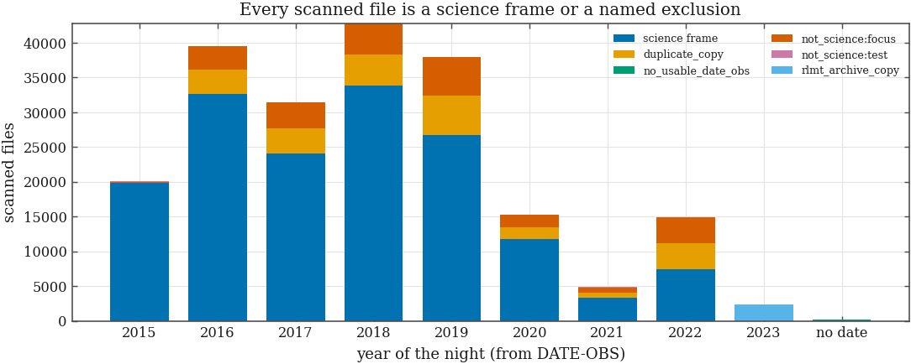
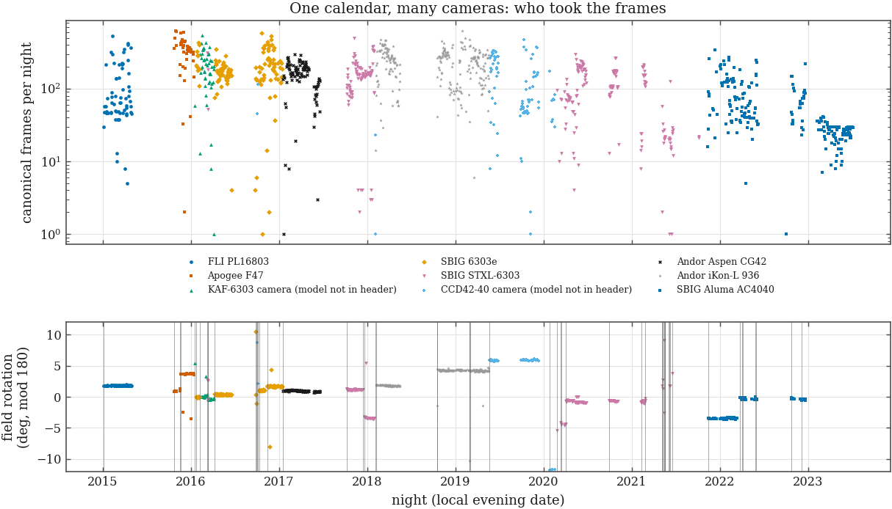
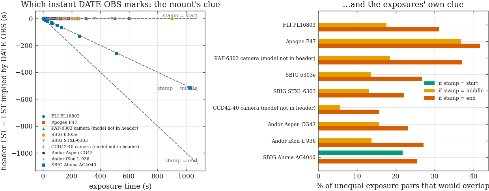
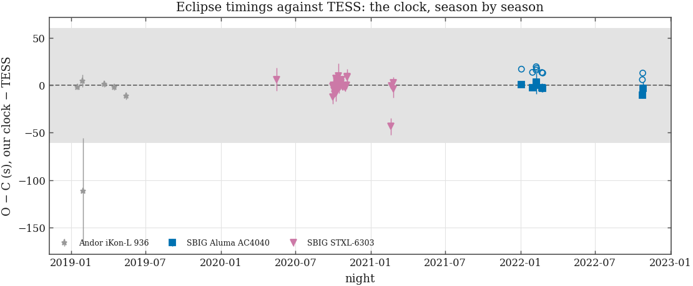
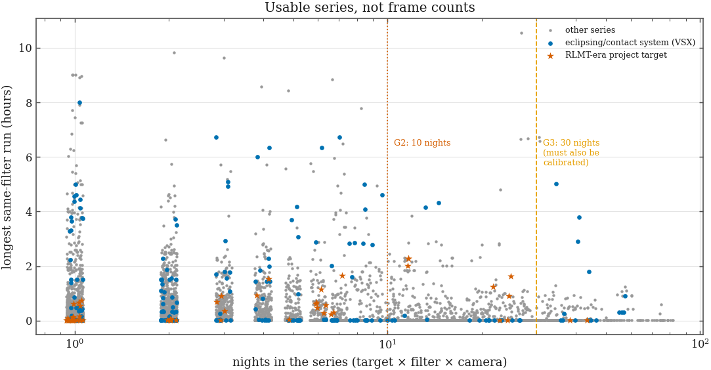
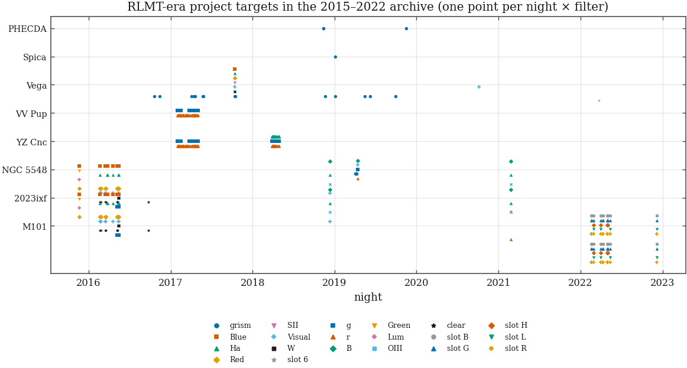
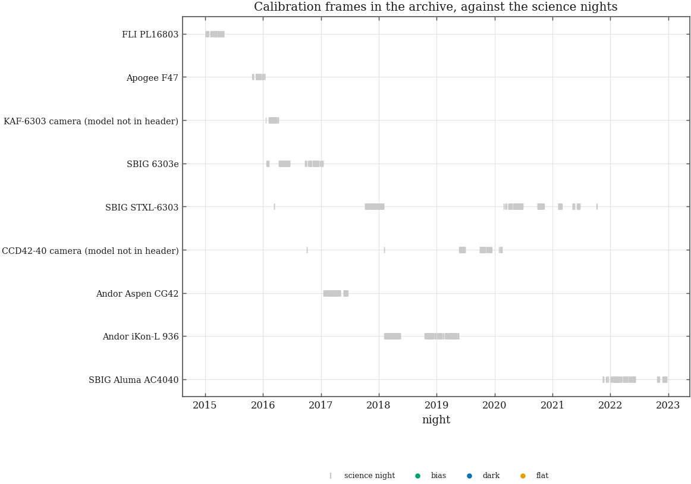
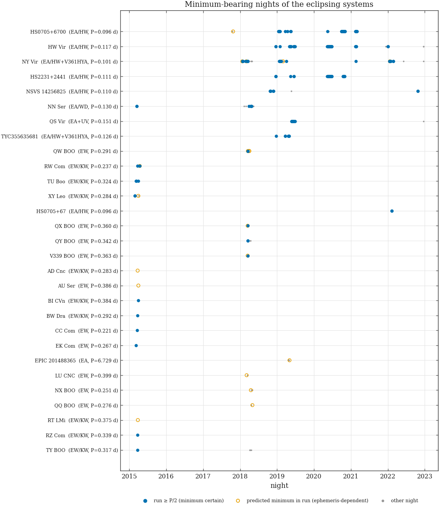

209,418 scanned files → 159,642 canonical science
frames · 2,618 targets · 1,085 nights
· 9 identified cameras · outcome:
NOT DECIDABLE — fix the census ·
built 2026-10-05T04:21Z
(L-census v1.1 (2026-10-04),
commit b89290c+dirty)
· plan & status
A census can always be read as a reason to start a project. What would have to be true of this archive for it to carry one — decided before looking?
The criteria are in
Legacy_Rigel/notes/GO_NOGO_PREREGISTERED.md, saved before the scan ran;
its sha256 at build time is 454bc5f9f07a525b… (stored
in census_meta.prereg_sha256, so a later edit is detectable).
The note discloses what was already known when it was written (the
committee's file count and camera list, the ledger's short "first scan"
target list) and what was not (nights, filters, run lengths, seasons and
calibration for any target).
| gate | what must hold | what it leads to |
|---|---|---|
| G0 | files-on-disk = rows + named exclusions; a camera timeline exists; the header-time convention is identified for every camera epoch feeding a passing gate | validity — without it the outcome is NOT DECIDABLE |
| G1 | ≥ 3 eclipsing/contact systems with minimum-bearing nights in ≥ 3 seasons | GO-CANDIDATE: period-change (O−C) timing paper, JAAVSO class |
| G2 | an RLMT-era target with ≥ 10 nights over ≥ 2 seasons in one tieable series (timing targets: plus a run ≥ 1 h) | TRANSFER to the owning project — not a sixth paper |
| G3 | a series with ≥ 30 calibrated nights, and a question and reader that can be named | GO-CANDIDATE only if the question is named |
Sections 1–8 are the census; section 9 applies the rule. Nothing in between is a reason for a go unless it is one of these gates.
The archive was crawled from a shared Drive, downloaded,
repaired, compressed and is still being de-duplicated. A first crawl
manifest (legacy_manifest_BAD_collisions.csv) is known to have
merged years. Before any target is counted: is every file accounted for,
and did the bad manifest damage anything?
The walk found 210,726 files
(2026-10-05T02:38Z). Only *.fz files are
opened; an uncompressed file is either the not-yet-deleted twin of a
scanned .fz (the dedupe job's unfinished work, a snapshot
count) or a frame that never compressed. Both identities close:
| quantity | n |
|---|---|
| files on disk (walk) | 210,726 |
| .fz files = scan rows | 209,418 |
| of which header unreadable (named exclusion) | 0 |
| uncompressed twin of a scanned .fz (named exclusion) | 461 |
| uncompressed with no .fz twin (named exclusion) | 828 |
| of which truncated at source, intact twin adopted (same DATE-OBS) | 0 |
| of which truncated at source, LOST (no file of that name elsewhere) | 584 |
| of which truncated at source, LOST (same-name file elsewhere is a different exposure: other DATE-OBS) | 242 |
| of which truncated at source, LOST (header itself cut short) | 2 |
| of which not on the truncated-at-source list | 0 |
| non-FITS files (named exclusion) | 19 |
| FILE IDENTITY residual (must be 0) | 0 |
| scan rows minus .fz files on disk (must be 0) | 0 |
| uncompressed files on disk (twins + twinless; check) | 0 |
| manifest paths (crawl) | 210,116 |
| scanned | 209,270 |
| .fz unreadable | 0 |
| uncompressed only | 828 |
| not on disk | 18 |
| MANIFEST IDENTITY residual (must be 0) | 0 |
| on disk but not in the manifest (FITS) | 148 |
Named exclusions at the path level, by status and tree (non-FITS files omitted):
| status | tree | paths |
|---|---|---|
| manifest_not_on_disk | 2016/ | 1 |
| manifest_not_on_disk | 2022/ | 16 |
| manifest_not_on_disk | archivar/ | 1 |
| uncompressed_only | 2015/ | 1 |
| uncompressed_only | 2016/ | 368 |
| uncompressed_only | 2017/ | 382 |
| uncompressed_only | 2018/ | 1 |
| uncompressed_only | archivar/ | 76 |
0 of 209,418 scanned files have an
unreadable header and stay in the table with error set:
None.
Frames truncated at the source. 828 files
on Google Drive are shorter than a FITS file of their own header can be: a
second, md5-verified download (2026-10-03) returned the same short bytes, so
the damage is in the source, not the transfer. The header survives and was
read. 243 of them share a file NAME with an intact frame elsewhere
in the archive; a twin stands in for a truncated frame only if it carries the
identical DATE-OBS:
| disposition | frames |
|---|---|
| truncated_lost | 584 |
| truncated_twin_mismatch | 242 |
| truncated_header_unreadable | 2 |
No same-name file is the same exposure: the names repeat because the scheduler restarts its day numbering every year (the very collision the year-stripped manifest would have caused). Every truncated frame is therefore LOST, and named. What they were (largest groups):
| OBJECT | lost frames | first night | last night |
|---|---|---|---|
| Focus | 152 | 2016-10-25 | 2017-02-24 |
| 1044 Teutonia | 29 | 2016-10-26 | 2016-12-10 |
| WASP-50b | 21 | 2016-10-19 | 2016-12-07 |
| Wolf 424 | 20 | 2016-12-09 | 2017-01-18 |
| 226P/Pigott-L | 18 | 2016-10-19 | 2016-12-04 |
| Field 1 | 13 | 2016-10-18 | 2017-01-18 |
| WASP-10 b | 10 | 2016-10-29 | 2016-10-29 |
| HAT-P-32 | 10 | 2016-11-27 | 2016-11-27 |
| HAT-P-20 | 10 | 2016-11-15 | 2016-11-15 |
| WASP-52 | 9 | 2016-10-19 | 2016-10-19 |
| WASP-33b | 8 | 2016-11-01 | 2016-11-01 |
| M1 | 8 | 2017-01-10 | 2017-01-17 |
The collision audit. The bad manifest holds
210,120 rows but only
180,035 distinct paths: stripping the year
folded 51,999 files into
21,914 colliding names, so
30,085 files would have been overwritten. The
two manifests list the same Drive file ids
(0 only in the good one,
0 only in the bad one), so the crawl
itself lost nothing. And the files now on disk under those names are
different exposures: in 21,910 of
21,914 groups every member carries a different
DATE-OBS; 4 groups contain members with an
identical stamp (genuine duplicates the dedup rule of section 2 handles).
The largest groups:
| name after stripping the year | manifest paths | scanned | distinct DATE-OBS |
|---|---|---|---|
day040/foc04008.fts | 7 | 7 | 7 |
day028/foc0280c.fts | 6 | 6 | 6 |
day028/foc0280d.fts | 6 | 6 | 6 |
day028/foc0280e.fts | 6 | 6 | 6 |
day028/foc0280f.fts | 6 | 6 | 6 |
day028/foc02810.fts | 6 | 5 | 5 |
Inside the scan, every row is either a science frame or carries one named reason for not being one:
| disposition | files |
|---|---|
| science frame | 159,642 |
| duplicate_copy | 23,614 |
| not_science:focus | 23,355 |
| rlmt_archive_copy | 2,419 |
| not_science:test | 201 |
| no_usable_date_obs | 187 |

.fz files; everything else on disk or in the manifest is a
named exclusion, and both identities have zero residual. The download
was made from the corrected manifest; the bad one overwrote nothing. The
frames truncated at the source cannot be recovered from this archive; a
same-name file is adopted only on an identical DATE-OBS, and
none qualifies.Counts below are counts of rows of
products/legacy/legacy.sqlite. When the dedupe job finishes,
re-run build_legacy_scan.py --rewalk: the twin count falls to
zero and nothing else moves.
The referee asked that the go/no-go rest on a census with a stated dedup rule. When are two files the same exposure, and which one counts?
Identity key (pre-registered): camera, DATE-OBS
exactly as recorded, exposure time, filter, image geometry. Of the
209,418 readable files, 185,804 are canonical;
23,614 are copies, in 23,385 groups.
| tree | readable files | canonical | copies |
|---|---|---|---|
| dayNNN | 183,431 | 183,198 | 233 |
| archivar | 25,800 | 2,419 | 23,381 |
| old | 187 | 187 | 0 |
Where the copies sit (pairs of trees a duplicate group spans):
| tree | tree | groups |
|---|---|---|
| archivar | dayNNN | 23,355 |
| dayNNN | dayNNN | 30 |
4 groups pair a raw file with a calibrated
twin (non-blank CALSTAT); the raw one is canonical.
187 frames have no usable DATE-OBS: they cannot be
identified by this key, are never merged with anything, and are excluded
from science counts by that clause (section 4 says which cameras).
Nights, runs, series and gates below are built from the canonical science frames.
Three things must be true before a legacy frame can sit beside an RLMT one: we know what its name encodes, its era is keyed on hardware rather than on a telescope's name, and it is not the same exposure as a frame the RLMT archive already holds.
The name. The scheduler named every file
pppDDDss: a three-letter request code, the day of year, and a
two-digit hexadecimal sequence. Target, filter and exposure are NOT in the
name — they come from the header for every frame. The day in the name
against the UT date of DATE-OBS:
| convention | files | with a date | day = UT day | day = UT + 1 | day = UT − 1 | off by more |
|---|---|---|---|---|---|---|
| scheduler (ppp DDD ss) | 198,726 | 198,540 | 193,638 | 2,005 | 2,299 | 598 |
| other | 10,692 | 10,691 | 0 | 0 | 0 | 0 |
The ±1 cases are frames taken across 00:00 UT under a
day number assigned when the night began. Names outside the convention
(first six): xuc037102.fts.fz, xuc037103.fts.fz, xuc037104.fts.fz, xuc037105.fts.fz, xuc037106.fts.fz, xuc037107.fts.fz.
Request codes: 188, of which 68 were used by exactly one
OBSERVER — a code is a request queue, not a person or a
target (foc is the autofocus queue). The ten largest:
| code | files | observers | most frequent observer | share | targets | first night | last night |
|---|---|---|---|---|---|---|---|
foc | 49,213 | 3 | robert-mutel@uiowa.edu | 97% | 26 | 2015-12-30 | 2023-07-06 |
xxm | 21,170 | 1 | xinyu-mai@uiowa.edu | 100% | 6 | 2018-10-25 | 2021-02-28 |
frm | 18,667 | 5 | robert-mutel@uiowa.edu | 56% | 426 | 2015-01-03 | 2022-03-24 |
xsd | 17,344 | 7 | DTallon | 48% | 167 | 2015-11-18 | 2019-06-28 |
gbm | 6,028 | 6 | xinyu-mai@uiowa.edu | 40% | 163 | 2016-09-28 | 2018-04-27 |
gam | 5,896 | 4 | mbparis | 96% | 39 | 2018-01-26 | 2020-04-30 |
xjd | 4,019 | 1 | jonathan-dolde@uiowa.edu | 100% | 10 | 2016-02-02 | 2016-04-27 |
xcm | 3,905 | 3 | christopher-michael@uiowa.edu | 98% | 64 | 2016-11-24 | 2019-11-18 |
gbg | 3,687 | 5 | christopher-michael@uiowa.edu | 50% | 94 | 2016-10-19 | 2019-12-13 |
xji | 3,371 | 2 | jacob-isbell@uiowa.edu | 70% | 23 | 2015-10-24 | 2016-04-27 |
Era keys. A legacy era is (camera, focal length).
The 0.5 m was named 'Gemini', 'Iowa Robotic Telescope' and 'Robert L.
Mutel Telescope' over these years with no optical change, so the name is
recorded but does not key. Every row also carries
archive_root = legacy-archive.
| era | camera | optics | files | science frames | first night | last night | TELESCOP as written |
|---|---|---|---|---|---|---|---|
| 1 | FLI PL16803 | telescope 'Rigel System' (no FOCALLEN) | 7,841 | 7,840 | 2015-01-03 | 2015-04-29 | Rigel System (7,841) |
| 2 | Apogee F47 | f = 3454 mm | 13,988 | 13,588 | 2015-10-24 | 2016-01-13 | Gemini (13,988) |
| 3 | KAF-6303 camera (model not in header) | f = 3454 mm | 10,618 | 9,001 | 2016-01-17 | 2016-04-06 | Gemini (10,618) |
| 4 | SBIG 6303e | f = 3454 mm | 27,762 | 22,392 | 2016-01-24 | 2017-01-12 | Gemini (27,762) |
| 5 | SBIG STXL-6303 | f = 3454 mm | 35,696 | 27,351 | 2016-03-10 | 2021-10-07 | Gemini (18,185), Iowa Robotic Telescope (17,511) |
| 6 | CCD42-40 camera (model not in header) | f = 3454 mm | 15,966 | 10,017 | 2016-10-03 | 2020-02-18 | Iowa Robotic Telescope (15,760), Gemini (206) |
| 7 | Andor Aspen CG42 | f = 3454 mm | 18,097 | 14,461 | 2017-01-17 | 2017-06-18 | Gemini (18,097) |
| 8 | Andor iKon-L 936 | f = 3454 mm | 60,346 | 46,588 | 2018-02-04 | 2019-05-20 | Iowa Robotic Telescope (60,328), Gemini (18) |
| 9 | SBIG Aluma AC4040 | f = 3454 mm | 19,104 | 8,404 | 2021-11-11 | 2023-07-06 | Iowa Robotic Telescope (16,757), Robert L. Mutel Telescope (2,347) |
The one configuration shared with the RLMT archive is the AC4040 on the same telescope. An RLMT era may lend its measured linearity and ceiling to legacy frames only where the camera, the EGAIN table (the driver changed it in 2023-10) and the full-frame geometry all match:
| RLMT era | readout mode | EGAIN | geometry | RLMT frames | RLMT first | RLMT last | matching legacy frames | legacy readout modes | legacy first | legacy last |
|---|---|---|---|---|---|---|---|---|---|---|
| 1 | High Gain StackPro | 1.054 | 4096x4096 bin 1 | 12,945 | 2023-02-06 | 2023-07-06 | 11,361 | High StackPro (9,525), High (1,836) | 2021-11-11 | 2022-12-21 |
| 2 | High Gain | 1.054 | 4096x4096 bin 1 | 3,621 | 2023-02-06 | 2023-07-06 | 11,361 | High StackPro (9,525), High (1,836) | 2021-11-11 | 2022-12-21 |
| 3 | High Gain StackPro | 1.054 | 2048x2048 bin 2 | 30 | 2023-04-06 | 2023-04-06 | 789 | High StackPro (782), High (7) | 2021-12-19 | 2022-02-24 |
| 4 | Low Gain | 22.638 | 4096x4096 bin 1 | 17 | 2023-04-17 | 2023-07-05 | 478 | Low (478) | 2021-11-14 | 2022-01-25 |
The second archive. 2,419 legacy frames
are the same exposure (identical DATE-OBS, exposure and
geometry) as a frame in the RLMT manifest — 2023-02-09T05:49:50.159 to
2023-07-07T11:07:01.429, the first months of the RLMT era, copied into the
legacy share as well. 306 of their RLMT twins are canonical
there.
rlmt_archive_copy), so no exposure is counted by two
projects. Eras key on camera and focal length; detector
characterisation crosses archives only through the matched-era table
above, and header gain never does.The legacy census proper ends in 2022-12. The AC4040's legacy frames (2021-11 to 2022-12) are the same camera RLMT eras 1–2 measure, with the same EGAIN table.
The plan called this the “Rigel-era” archive: a different telescope with an FLI PL16803. The telescope engineer said that holds for only a few percent of it. What do the headers say — and can the headers be trusted on which camera took a frame?
Telescope and focal length as written in the headers (canonical frames):
| TELESCOP | FOCALLEN (mm) | canonical frames | first night | last night |
|---|---|---|---|---|
| Rigel System | — | 7,841 | 2015-01-03 | 2015-04-29 |
| Gemini | 3,454 | 80,965 | 2015-10-24 | 2018-02-04 |
| Iowa Robotic Telescope | 3,454 | 94,651 | 2018-02-06 | 2023-02-09 |
| Robert L. Mutel Telescope | 3,454 | 2,347 | 2023-02-10 | 2023-07-06 |
7,841 of 185,804 canonical frames
(4.2%) carry TELESCOP = Rigel System;
the last such night is 2015-04-29. Everything after is the 0.5 m
(FOCALLEN 3454 mm, APTDIA 508 mm) under
two names.
Camera identity. INSTRUME is a label the
scheduler copies from its configuration; the pixel pitch and frame format
come from the camera driver. Where they disagree the sensor wins:
10,556 frames carry an INSTRUME that names a
camera whose sensor cannot produce the recorded pixel pitch or frame width
(a stale label across a camera swap), and 268 have no label at
all. Those are attributed by sensor signature — and because two
cameras share each such sensor, the model is honestly unknown:
| camera (as identified) | canonical frames | first night | last night | nights | native format | native pixel (µm) | identity basis | INSTRUME text |
|---|---|---|---|---|---|---|---|---|
| FLI PL16803 | 7,841 | 2015-01-03 | 2015-04-29 | 67 | 4096x4096 (7,841) | label (7,841) | FLI ProLine PL16803 Rev 1.01 (7,841) | |
| Apogee F47 | 13,858 | 2015-10-24 | 2016-01-13 | 41 | 1024x1024 (13,988) | 13 (13,988) | label (13,988) | Apogee F47 1Kx1K 13u pixel (13,988) |
| KAF-6303 camera (model not in header) | 9,773 | 2016-01-17 | 2016-04-06 | 47 | 3072x2046 (9,549), 3072x2047 (1,069) | 9 (10,618) | sensor (label stale) (10,350), sensor (no label) (268) | Apogee F47 1Kx1K 13u pixel (10,350), (268) |
| SBIG 6303e | 25,069 | 2016-01-24 | 2017-01-12 | 125 | 3072x2046 (24,511), 3072x2047 (3,251) | 9 (27,762) | label (27,762) | SBIG 6303e (24,942), SBIG 6303e 3072x2047 9u pixels (2,610), SBIG6303e (210) |
| SBIG STXL-6303 | 31,454 | 2016-03-10 | 2021-10-07 | 250 | 3072x2046 (18,161), 3072x2047 (17,535) | 9 (35,696) | label (35,696) | SBIG STXL-6303 3 CCD Camera (18,224), SBIG STXL-6303e (17,472) |
| CCD42-40 camera (model not in header) | 12,990 | 2016-10-03 | 2020-02-18 | 97 | 2048x2048 (15,966) | 13.5 (15,966) | label (15,760), sensor (label stale) (206) | Andor Tech (15,760), SBIG 6303e (161), SBIG STXL-6303e (45) |
| Andor Aspen CG42 | 16,297 | 2017-01-17 | 2017-06-18 | 103 | 2048x2048 (17,942), 2047x2047 (155) | 13.5 (18,097) | label (18,097) | Andor Aspen CG42 (18,097) |
| Andor iKon-L 936 | 53,458 | 2018-02-04 | 2019-05-20 | 232 | 2048x2048 (60,346) | 13.5 (60,346) | label (60,346) | Andor IKON L 936 (60,328), IKON L936 (18) |
| SBIG Aluma AC4040 | 15,064 | 2021-11-11 | 2023-07-06 | 241 | 4096x4096 (19,087), 4096x8192 (15), 512x512 (2) | 9 (19,104) | label (19,104) | SBIG Aluma AC4040 (16,685), DL Imaging (2,419) |
Detector configuration cards, per camera. No gain is
asserted from these: 93,165 scanned headers carry
EGAIN and 0 carry GAIN; a camera
serial-number card (CAMSN/SERIALNO) appears in
37 of the 217 distinct header keyword sets.
| camera | binning | READOUTM | EGAIN (header) | GAIN card | SET-TEMP (°C) | software | CALSTAT | no usable date |
|---|---|---|---|---|---|---|---|---|
| FLI PL16803 | 2 (7,841) | Talon (no SWCREATE) (7,841) | (none) (7,841) | 0 | ||||
| Apogee F47 | 1 (13,988) | Monochrome (11,508), Monochrome (Preflash) (2,480) | -30 (10,921), -20 (856) | MaxIm DL 6.08 (13,988) | (none) (13,988) | 0 | ||
| KAF-6303 camera (model not in header) | 2 (9,549), 1 (1,069) | Raw (10,618) | 2.93 (9,549), 1.61 (1,069) | -30 (10,618) | MaxIm DL 6.08 (10,618) | (none) (10,618) | 0 | |
| SBIG 6303e | 2 (24,511), 1 (3,251) | Raw (27,762) | 2.93 (24,511), 1.61 (3,251) | -30 (25,753) | MaxIm DL 6.08 (27,762) | (none) (27,761), BDF (1) | 0 | |
| SBIG STXL-6303 | 2 (18,161), 1 (17,535) | Raw (35,696) | 1.59 (17,511), 2.89 (17,472), 2.93 (689), 1.61 (24) | -30 (35,639), -20 (57) | MaxIm DL 6.21 (17,511), MaxIm DL 6.11 (17,472), MaxIm DL 6.08 (713) | BDF (32,297), (none) (3,399) | 0 | |
| CCD42-40 camera (model not in header) | 1 (15,804), 2 (162) | Monochrome (161) | -40 (15,805), -30 (161) | MaxIm DL 6.10 (15,760), MaxIm DL 6.08 (161), MaxIm DL 6.11 (45) | BDF (14,463), (none) (1,503) | 0 | ||
| Andor Aspen CG42 | 1 (18,087), 2 (10) | Monochrome (18,097) | -30 (17,956) | MaxIm DL 6.08 (18,097) | (none) (18,097) | 0 | ||
| Andor iKon-L 936 | 1 (60,346) | -40 (60,331), -30 (15) | MaxIm DL 6.11 (60,346) | BDF (57,047), (none) (3,299) | 0 | |||
| SBIG Aluma AC4040 | 1 (18,314), 2 (790) | High StackPro (14,077), High Gain StackPro (2,419), High (2,115), Low (478), HDR (15) | 1.054 (18,611), 22.638 (478) | -20 (19,104) | MaxIm DL 6.30 (17,431), MaxIm DL 6.28 (1,080), MaxIm DL 6.29 (593) | DF (18,077), (none) (1,027) | 187 |
A series never pools cameras. The 2022 AC4040 frames are the RLMT-era detector on the same telescope and may share that camera's detector characterisation (linearity, ceiling) once S2's flat-pair measurements exist — but not its header gain.
What physically changed, and when? A master frame or a comparison-star solution must never be carried across a camera swap or a re-seated camera.

The camera timeline — 17 stints of 9 identified cameras. A stint is a maximal block of nights dominated by one camera; ‘mixed nights’ had frames from more than one.
| stint | camera | first night | last night | nights | canonical frames | mixed nights |
|---|---|---|---|---|---|---|
| 1 | FLI PL16803 | 2015-01-03 | 2015-04-29 | 67 | 7,841 | 0 |
| 2 | Apogee F47 | 2015-10-24 | 2016-01-13 | 41 | 13,858 | 0 |
| 3 | KAF-6303 camera (model not in header) | 2016-01-17 | 2016-01-17 | 1 | 58 | 0 |
| 4 | SBIG 6303e | 2016-01-24 | 2016-02-05 | 10 | 2,636 | 0 |
| 5 | KAF-6303 camera (model not in header) | 2016-02-07 | 2016-03-09 | 26 | 6,329 | 0 |
| 6 | SBIG STXL-6303 | 2016-03-10 | 2016-03-12 | 3 | 547 | 0 |
| 7 | KAF-6303 camera (model not in header) | 2016-03-13 | 2016-04-06 | 20 | 3,386 | 0 |
| 8 | SBIG 6303e | 2016-04-09 | 2016-09-29 | 59 | 9,639 | 0 |
| 9 | CCD42-40 camera (model not in header) | 2016-10-03 | 2016-10-04 | 2 | 160 | 0 |
| 10 | SBIG 6303e | 2016-10-10 | 2017-01-12 | 56 | 12,794 | 0 |
| 11 | Andor Aspen CG42 | 2017-01-17 | 2017-06-18 | 103 | 16,297 | 0 |
| 12 | SBIG STXL-6303 | 2017-10-07 | 2018-01-30 | 96 | 15,223 | 0 |
| 13 | CCD42-40 camera (model not in header) | 2018-02-03 | 2018-02-04 | 2 | 38 | 1 |
| 14 | Andor iKon-L 936 | 2018-02-06 | 2019-05-20 | 231 | 53,444 | 0 |
| 15 | CCD42-40 camera (model not in header) | 2019-05-23 | 2020-02-18 | 93 | 12,806 | 0 |
| 16 | SBIG STXL-6303 | 2020-02-26 | 2021-10-07 | 151 | 15,684 | 0 |
| 17 | SBIG Aluma AC4040 | 2021-11-11 | 2023-07-06 | 241 | 14,877 | 0 |
Rotation epochs inside the stints: a new epoch where the nightly median rotation steps by more than 0.3° and stays there (one-night excursions that return are counted, not promoted). 56 epochs; 24 rest on a single measured night and are the least secure.
| epoch | stint | camera | first night | last night | rotation (°) | nights measured | excursion nights |
|---|---|---|---|---|---|---|---|
| 1 | 1 | FLI PL16803 | 2015-01-03 | 2015-04-29 | 1.82 | 59 | 0 |
| 2 | 2 | Apogee F47 | 2015-10-24 | 2015-11-17 | 0.93 | 6 | 0 |
| 3 | 2 | Apogee F47 | 2015-11-18 | 2015-11-18 | 1.31 | 1 | 0 |
| 4 | 2 | Apogee F47 | 2015-11-19 | 2016-01-13 | 3.69 | 30 | 2 |
| 5 | 3 | KAF-6303 camera (model not in header) | 2016-01-17 | 2016-01-17 | 5.39 | 1 | 0 |
| 6 | 4 | SBIG 6303e | 2016-01-24 | 2016-02-05 | -0.02 | 9 | 0 |
| 7 | 5 | KAF-6303 camera (model not in header) | 2016-02-07 | 2016-03-09 | 0.02 | 23 | 1 |
| 8 | 6 | SBIG STXL-6303 | 2016-03-10 | 2016-03-11 | 2.68 | 2 | 0 |
| 9 | 6 | SBIG STXL-6303 | 2016-03-12 | 2016-03-12 | -0.42 | 1 | 0 |
| 10 | 7 | KAF-6303 camera (model not in header) | 2016-03-13 | 2016-04-05 | -0.38 | 19 | 0 |
| 11 | 8 | SBIG 6303e | 2016-04-09 | 2016-09-24 | 0.38 | 53 | 0 |
| 12 | 8 | SBIG 6303e | 2016-09-25 | 2016-09-25 | 10.51 | 1 | 0 |
| 13 | 8 | SBIG 6303e | 2016-09-28 | 2016-09-28 | -1.03 | 1 | 0 |
| 14 | 9 | CCD42-40 camera (model not in header) | 2016-10-03 | 2016-10-03 | 8.75 | 1 | 0 |
| 15 | 9 | CCD42-40 camera (model not in header) | 2016-10-04 | 2016-10-04 | 2.16 | 1 | 0 |
| 16 | 10 | SBIG 6303e | 2016-10-10 | 2016-11-01 | 1.07 | 14 | 1 |
| 17 | 10 | SBIG 6303e | 2016-11-12 | 2017-01-12 | 1.71 | 32 | 2 |
| 18 | 11 | Andor Aspen CG42 | 2017-01-17 | 2017-06-18 | 0.94 | 97 | 0 |
| 19 | 12 | SBIG STXL-6303 | 2017-10-07 | 2017-12-14 | 1.14 | 53 | 1 |
| 20 | 12 | SBIG STXL-6303 | 2017-12-15 | 2017-12-15 | -17.44 | 1 | 0 |
| 21 | 12 | SBIG STXL-6303 | 2017-12-20 | 2018-01-30 | -3.41 | 32 | 1 |
| 22 | 13 | CCD42-40 camera (model not in header) | 2018-02-03 | 2018-02-04 | — | 0 | 0 |
| 23 | 14 | Andor iKon-L 936 | 2018-02-07 | 2018-05-16 | 1.82 | 77 | 1 |
| 24 | 14 | Andor iKon-L 936 | 2018-10-18 | 2018-10-18 | -1.42 | 1 | 0 |
| 25 | 14 | Andor iKon-L 936 | 2018-10-19 | 2019-02-28 | 4.29 | 80 | 1 |
| 26 | 14 | Andor iKon-L 936 | 2019-03-01 | 2019-03-01 | -10.24 | 1 | 0 |
| 27 | 14 | Andor iKon-L 936 | 2019-03-02 | 2019-03-02 | -19.89 | 1 | 0 |
| 28 | 14 | Andor iKon-L 936 | 2019-03-03 | 2019-05-20 | 4.21 | 54 | 3 |
| 29 | 15 | CCD42-40 camera (model not in header) | 2019-05-23 | 2019-12-13 | 5.88 | 64 | 1 |
| 30 | 15 | CCD42-40 camera (model not in header) | 2020-01-28 | 2020-02-17 | -11.72 | 4 | 0 |
| 31 | 16 | SBIG STXL-6303 | 2020-02-26 | 2020-02-26 | -5.46 | 1 | 0 |
| 32 | 16 | SBIG STXL-6303 | 2020-03-13 | 2020-03-13 | -4.12 | 1 | 0 |
| 33 | 16 | SBIG STXL-6303 | 2020-03-15 | 2020-04-02 | -4.43 | 6 | 0 |
| 34 | 16 | SBIG STXL-6303 | 2020-04-04 | 2020-06-26 | -0.87 | 54 | 3 |
| 35 | 16 | SBIG STXL-6303 | 2020-09-29 | 2021-02-08 | -0.59 | 34 | 0 |
| 36 | 16 | SBIG STXL-6303 | 2021-02-09 | 2021-02-25 | -0.61 | 9 | 5 |
| 37 | 16 | SBIG STXL-6303 | 2021-02-26 | 2021-02-26 | -0.23 | 1 | 0 |
| 38 | 16 | SBIG STXL-6303 | 2021-05-07 | 2021-05-07 | 1.83 | 1 | 0 |
| 39 | 16 | SBIG STXL-6303 | 2021-05-08 | 2021-05-08 | 1.35 | 1 | 0 |
| 40 | 16 | SBIG STXL-6303 | 2021-05-10 | 2021-05-10 | 2.68 | 1 | 0 |
| 41 | 16 | SBIG STXL-6303 | 2021-05-15 | 2021-05-15 | -2.55 | 1 | 0 |
| 42 | 16 | SBIG STXL-6303 | 2021-05-17 | 2021-05-17 | 9.08 | 1 | 0 |
| 43 | 16 | SBIG STXL-6303 | 2021-05-18 | 2021-05-18 | -39.10 | 1 | 0 |
| 44 | 16 | SBIG STXL-6303 | 2021-05-19 | 2021-05-19 | 44.06 | 1 | 0 |
| 45 | 16 | SBIG STXL-6303 | 2021-06-02 | 2021-06-02 | -17.48 | 1 | 0 |
| 46 | 16 | SBIG STXL-6303 | 2021-06-06 | 2021-06-08 | 1.83 | 2 | 0 |
| 47 | 16 | SBIG STXL-6303 | 2021-06-09 | 2021-06-09 | 38.22 | 1 | 0 |
| 48 | 16 | SBIG STXL-6303 | 2021-06-18 | 2021-06-18 | 3.83 | 1 | 0 |
| 49 | 17 | SBIG Aluma AC4040 | 2021-11-14 | 2022-03-12 | -3.45 | 53 | 0 |
| 50 | 17 | SBIG Aluma AC4040 | 2022-03-24 | 2022-04-01 | -0.13 | 3 | 0 |
| 51 | 17 | SBIG Aluma AC4040 | 2022-04-02 | 2022-04-04 | -0.49 | 3 | 0 |
| 52 | 17 | SBIG Aluma AC4040 | 2022-04-05 | 2022-05-25 | -0.40 | 8 | 0 |
| 53 | 17 | SBIG Aluma AC4040 | 2022-05-27 | 2022-05-28 | -0.02 | 2 | 0 |
| 54 | 17 | SBIG Aluma AC4040 | 2022-05-30 | 2022-06-04 | -0.51 | 5 | 0 |
| 55 | 17 | SBIG Aluma AC4040 | 2022-10-24 | 2022-12-01 | -0.31 | 10 | 0 |
| 56 | 17 | SBIG Aluma AC4040 | 2022-12-06 | 2022-12-21 | -0.40 | 11 | 0 |
Flip state as recorded (FLIPSTAT):
Flip/Mirror × 77,347, × 66,398, Rotate 90 CCW × 20,116, Mirror × 14,102, (no card) × 7,841.
Any later photometry on a legacy series must split at these boundaries. The 0.3° rule is applied to the scheduler's own plate solutions, so an epoch is only as good as those solutions.
Two acquisition systems and nine cameras wrote these
headers. Is DATE-OBS UTC? Does it mark the start of the
exposure? Is it there at all? And how much of that can a header census
establish?

| camera | software | first night | last night | DATE-OBS digits | JD card within 2 s | LST residual median (s) | LST 5–95% (s) | LST residual slope vs exposure | intercept (s) | JD-HELIO probe (÷ EXPTIME) | unequal-exposure pairs | overlap if start | if middle | if end | verdict (overlap test) |
|---|---|---|---|---|---|---|---|---|---|---|---|---|---|---|---|
| FLI PL16803 | Talon (no SWCREATE) | 2015-01-03 | 2015-04-29 | 3 | 7,841 (100.0%) | 0.26 | -0.2 … 0.7 | 0.000 | 0.27 | — | 1,836 | 0 | 323 | 570 | start of exposure |
| Apogee F47 | MaxIm DL 6.08 | 2015-10-24 | 2016-01-13 | 0 | 13,988 (100.0%) | -0.10 | -0.1 … -0.0 | 0.000 | -0.14 | — | 2,562 | 0 | 941 | 1,067 | start of exposure |
| KAF-6303 camera (model not in header) | MaxIm DL 6.08 | 2016-01-17 | 2016-04-06 | 0 | 10,618 (100.0%) | -0.09 | -0.2 … -0.0 | -0.000 | -0.14 | — | 3,323 | 0 | 614 | 1,229 | start of exposure |
| SBIG 6303e | MaxIm DL 6.08 | 2016-01-24 | 2017-01-12 | 0 | 27,762 (100.0%) | -0.38 | -0.5 … -0.0 | 0.000 | -0.38 | 0.500 | 6,625 | 0 | 898 | 1,772 | start of exposure |
| SBIG STXL-6303 | MaxIm DL 6.08 | 2016-03-10 | 2016-03-12 | 0 | 713 (100.0%) | -0.13 | -1.1 … 15,410.9 | 0.000 | -0.19 | — | 343 | 0 | 37 | 156 | start of exposure |
| CCD42-40 camera (model not in header) | MaxIm DL 6.08 | 2016-10-03 | 2016-10-04 | 0 | 161 (100.0%) | -0.41 | -0.4 … -0.4 | -0.000 | -0.42 | 0.500 | 60 | 0 | 10 | 28 | start of exposure |
| Andor Aspen CG42 | MaxIm DL 6.08 | 2017-01-17 | 2017-06-18 | 0 | 18,097 (100.0%) | -0.54 | -0.6 … -0.4 | -0.000 | -0.54 | 0.500 | 4,175 | 0 | 653 | 962 | start of exposure |
| SBIG STXL-6303 | MaxIm DL 6.11 | 2017-10-07 | 2018-01-30 | 0 | 17,472 (100.0%) | -0.74 | -0.8 … -0.7 | -0.000 | -0.76 | 0.500 | 3,359 | 0 | 586 | 887 | start of exposure |
| CCD42-40 camera (model not in header) | MaxIm DL 6.11 | 2018-02-03 | 2018-02-04 | 0 | 45 (100.0%) | -0.67 | -1.7 … -0.7 | 0.001 | -0.84 | 0.521 | 0 | 0 | 0 | 0 | not identifiable from headers (no unequal consecutive exposures) |
| Andor iKon-L 936 | MaxIm DL 6.11 | 2018-02-04 | 2019-05-20 | 0 | 60,346 (100.0%) | -0.92 | -1.1 … -0.7 | 0.000 | -0.94 | 0.500 | 14,513 | 0 | 1,994 | 3,939 | start of exposure |
| CCD42-40 camera (model not in header) | MaxIm DL 6.10 | 2019-05-23 | 2020-02-18 | 0 | 15,760 (100.0%) | -1.06 | -1.1 … -1.0 | -0.000 | -1.10 | 0.500 | 1,860 | 0 | 100 | 272 | start of exposure |
| SBIG STXL-6303 | MaxIm DL 6.21 | 2020-02-26 | 2021-10-07 | 2 | 17,511 (100.0%) | -1.46 | -2.1 … -1.1 | -0.000 | -1.52 | -3.759 | 1,819 | 0 | 94 | 179 | start of exposure |
| SBIG Aluma AC4040 | MaxIm DL 6.28 | 2021-11-11 | 2021-12-07 | 3 | 893 (100.0%) | -31.91 | -65.9 … -2.2 | -0.500 | -2.26 | 0.500 | 228 | 20 | 0 | 18 | MIDDLE of exposure |
| SBIG Aluma AC4040 | MaxIm DL 6.29 | 2021-12-11 | 2021-12-19 | 2 | 593 (100.0%) | -31.68 | -129.7 … -2.1 | -0.501 | -1.65 | -1.238 | 79 | 20 | 0 | 17 | MIDDLE of exposure |
| SBIG Aluma AC4040 | MaxIm DL 6.30 | 2021-12-20 | 2023-07-06 | 3 | 17,431 (100.0%) | -35.95 | -257.5 … -11.1 | -0.500 | -3.89 | 0.500 | 2,540 | 580 | 0 | 690 | MIDDLE of exposure |
Four tests, of different strengths. (1) The
JD card agrees with DATE-OBS on every frame
— to within rounding, which means it is the same number written
twice, not a second clock. (2) The mount's LST agrees with
the sidereal time computed from DATE-OBS to seconds: the
stamp is UTC (a local-time stamp would sit seven hours away). (3) The
overlap test: a stamp convention is refuted by pairs of consecutive
exposures that it would make overlap. (4) The slope of the LST residual
against exposure time: 0 for a start stamp, −0.5 for a mid-exposure
stamp, −1 for an end stamp. Tests 3 and 4 are independent of each
other (frame spacing vs a second header card) and agree. Verdicts:
| verdict | camera epochs | files | first night | last night | cameras |
|---|---|---|---|---|---|
| start of exposure | 11 | 190,269 | 2015-01-03 | 2021-10-07 | FLI PL16803,Apogee F47,KAF-6303 camera (model not in header),SBIG 6303e,SBIG STXL-6303,CCD42-40 camera (model not in header),Andor Aspen CG42,Andor iKon-L 936 |
| MIDDLE of exposure | 3 | 19,104 | 2021-11-11 | 2023-07-06 | SBIG Aluma AC4040 |
| not identifiable from headers (no unequal consecutive exposures) | 1 | 45 | 2018-02-03 | 2018-02-04 | CCD42-40 camera (model not in header) |
Other time cards in the 217 distinct
keyword sets: JD-HELIO in 131, MJD-OBS in
0, DATE-AVG in 0, TIME-OBS in
22, TIMESYS in 22. Directory names
against the UT date of DATE-OBS, and frames with no usable
stamp:
| camera | software | files | no usable DATE-OBS | directory = UT date | off by > 1 day |
|---|---|---|---|---|---|
| FLI PL16803 | Talon (no SWCREATE) | 7,841 | 0 | 99.9% | 0 |
| Apogee F47 | MaxIm DL 6.08 | 13,988 | 0 | 92.6% | 364 |
| KAF-6303 camera (model not in header) | MaxIm DL 6.08 | 10,618 | 0 | 100.0% | 0 |
| SBIG 6303e | MaxIm DL 6.08 | 27,762 | 0 | 98.1% | 311 |
| SBIG STXL-6303 | MaxIm DL 6.08 | 713 | 0 | 99.6% | 0 |
| CCD42-40 camera (model not in header) | MaxIm DL 6.08 | 161 | 0 | 100.0% | 0 |
| Andor Aspen CG42 | MaxIm DL 6.08 | 18,097 | 0 | 95.3% | 65 |
| SBIG STXL-6303 | MaxIm DL 6.11 | 17,472 | 0 | 98.8% | 0 |
| CCD42-40 camera (model not in header) | MaxIm DL 6.11 | 45 | 0 | 100.0% | 0 |
| Andor iKon-L 936 | MaxIm DL 6.11 | 60,346 | 0 | 98.0% | 4 |
| CCD42-40 camera (model not in header) | MaxIm DL 6.10 | 15,760 | 0 | 90.8% | 5 |
| SBIG STXL-6303 | MaxIm DL 6.21 | 17,511 | 0 | 99.0% | 0 |
| SBIG Aluma AC4040 | MaxIm DL 6.28 | 1,080 | 187 | 100.0% | 0 |
| SBIG Aluma AC4040 | MaxIm DL 6.29 | 593 | 0 | 100.0% | 0 |
| SBIG Aluma AC4040 | MaxIm DL 6.30 | 17,431 | 0 | 100.0% | 0 |
187 readable frames have no usable
DATE-OBS (absent, or a year outside 2014–
2023 — a camera clock that was never set). They are
named exclusions. The largest groups:
| camera | DATE-OBS date | frames | CALSTART min | CALSTART max | example path |
|---|---|---|---|---|---|
| SBIG Aluma AC4040 | 1970-01-01 | 187 | 2021-12-02 07:30:04 | 2021-12-08 07:30:13 | old/day336/foc33606.fts.fz |
DATE-OBS is UTC throughout. It is
the START of the exposure in 11 camera epochs; it is NOT the
start in 4:
MIDDLE of exposure — SBIG Aluma AC4040 (2021-11-11 to 2023-07-06); not identifiable from headers (no unequal consecutive exposures) — CCD42-40 camera (model not in header) (2018-02-03 to 2018-02-04). Where the verdict is
“middle”, both independent tests say so: every unequal-exposure
pair is consistent with a mid-exposure stamp, start and end are each
refuted by hundreds of pairs, and the LST residual falls as half the
exposure time — and section 5b's eclipses, timed against TESS, agree.
S3's probe (MaxIm's JD-HELIO, column ‘JD-HELIO probe’) reads
0.5 on these same frames: MaxIm computed its heliocentric time as if
DATE-OBS were the start. That probe records the software's assumption, so
it cannot tell a start stamp from a mid stamp; only the spacing, LST and
eclipse tests can. Not established, and not establishable from headers: the
absolute clock. JD and LST derive from the same computers as
DATE-OBS; a PC clock that was a minute slow would pass every
test here. The observational astronomer's criterion (O−C of archived
minima within 60 s of the literature, per season) needs photometry
and is outside a census; section 8b lists the nights that could carry
it.A timing analysis must apply the convention of the camera epoch a frame belongs to; treating a mid-exposure stamp as a start stamp is an error of half the exposure time, with the sign of a late clock. The camera for which this is found is the SBIG Aluma AC4040 — the RLMT-era camera — under the same acquisition software family, so this finding is handed to the shared clock stage (F-8) and to the CV timing analysis for an independent check on the RLMT archive; this census does not assert it there. Any absolute epoch from this archive remains conditional on a per-season clock measurement that has not been made.
Section 5 fixed what each stamp means. Was the clock that wrote it right — season by season, to 60 seconds?
The clocks are the primary eclipses of post-common-envelope binaries (HW Vir-type sdB + dM; WD + dM) in the archive. Their reference is not a literature ephemeris — every one of these stars wanders by tens of seconds or more about any linear ephemeris — but eclipse times MEASURED in TESS 2-min photometry of the same star (absolute BJD_TDB), one per half-sector, fitted locally. A legacy eclipse is predicted only inside the TESS span or within 400 days of it; beyond that the star's own timing variations, not our clock, would set the answer, and the eclipse is recorded as out of range. TESS reference times:
| star | half-sectors | timed | sectors | best σ (s) | worst σ (s) |
|---|---|---|---|---|---|
| ASAS J193833+4604.0 | 11 | 4 | 14,15,40,54,74,75,81,82 | 2.1 | 2.7 |
| HS 2231+2441 | 3 | 3 | 56,83 | 1.7 | 2.2 |
| HW Vir | 2 | 2 | 46 | 2.0 | 2.3 |
| NN Ser | 2 | 2 | 51 | 5.1 | 5.7 |
| NY Vir | 8 | 8 | 23,46,50,91 | 1.4 | 1.9 |
| QS Vir | 2 | 2 | 91 | 20.3 | 20.6 |
| SDSS J082053.53+000843.4 | 6 | 3 | 7,34,61 | 57.8 | 100.8 |
| V0470 Cam | 10 | 10 | 20,47,60,73,74 | 0.7 | 1.4 |
| V1828 Aql | 4 | 4 | 54,81 | 1.2 | 3.4 |
Legacy eclipses: prediction out of range 135; admitted 62. Photometric series: ok 50; target not identified on the reference 4; Gaia fit did not converge 3; fewer than 8 sources on the reference 2. Fits: ok 50; photometry refused 11; too_few_points 1. Photometry and fit are S3b's, unchanged (blind mid-time search, block bootstrap, analysis variants); the field is identified by a Gaia DR3 fit because legacy headers carry no plate scale; there is no master calibration (none is in the archive) and the saturation veto is a fixed 50,000 ADU.

| camera | software | season | first night | last night | nights | stamp reading | eclipses | O − C (s) | σ (s) | χ² / dof | other reading (s) | stars | verdict |
|---|---|---|---|---|---|---|---|---|---|---|---|---|---|
| FLI PL16803 | Talon (no SWCREATE) | 2014/15 | 2015-01-03 | 2015-04-29 | 67 | start of exposure | 0 | — | — | — | — | — | NO CLOCK EVENT — offset not measured; carried as unknown |
| Apogee F47 | MaxIm DL 6.08 | 2015/16 | 2015-10-24 | 2016-01-13 | 41 | start of exposure | 0 | — | — | — | — | — | NO CLOCK EVENT — offset not measured; carried as unknown |
| KAF-6303 camera (model not in header) | MaxIm DL 6.08 | 2015/16 | 2016-01-17 | 2016-04-06 | 47 | start of exposure | 0 | — | — | — | — | — | NO CLOCK EVENT — offset not measured; carried as unknown |
| SBIG 6303e | MaxIm DL 6.08 | 2015/16 | 2016-01-24 | 2016-06-17 | 64 | start of exposure | 0 | — | — | — | — | — | NO CLOCK EVENT — offset not measured; carried as unknown |
| SBIG STXL-6303 | MaxIm DL 6.08 | 2015/16 | 2016-03-10 | 2016-03-12 | 3 | start of exposure | 0 | — | — | — | — | — | NO CLOCK EVENT — offset not measured; carried as unknown |
| SBIG 6303e | MaxIm DL 6.08 | 2016/17 | 2016-09-23 | 2017-01-12 | 61 | start of exposure | 0 | — | — | — | — | — | NO CLOCK EVENT — offset not measured; carried as unknown |
| CCD42-40 camera (model not in header) | MaxIm DL 6.08 | 2016/17 | 2016-10-03 | 2016-10-04 | 2 | start of exposure | 0 | — | — | — | — | — | NO CLOCK EVENT — offset not measured; carried as unknown |
| Andor Aspen CG42 | MaxIm DL 6.08 | 2016/17 | 2017-01-17 | 2017-06-18 | 103 | start of exposure | 0 | — | — | — | — | — | NO CLOCK EVENT — offset not measured; carried as unknown |
| SBIG STXL-6303 | MaxIm DL 6.11 | 2017/18 | 2017-10-07 | 2018-01-30 | 96 | start of exposure | 0 | — | — | — | — | — | NO CLOCK EVENT — offset not measured; carried as unknown |
| CCD42-40 camera (model not in header) | MaxIm DL 6.11 | 2017/18 | 2018-02-03 | 2018-02-04 | 2 | not identifiable from headers (no unequal consecutive exposures) | 0 | — | — | — | — | — | NO CLOCK EVENT — offset not measured; carried as unknown |
| Andor iKon-L 936 | MaxIm DL 6.11 | 2017/18 | 2018-02-04 | 2018-05-16 | 83 | start of exposure | 0 | — | — | — | — | — | NO CLOCK EVENT — offset not measured; carried as unknown |
| Andor iKon-L 936 | MaxIm DL 6.11 | 2018/19 | 2018-10-17 | 2019-05-20 | 147 | start of exposure | 6 | -2.8 | 18.3 | 9.2 / 5.0 | -22.8 | V0470 Cam | PASS |
| CCD42-40 camera (model not in header) | MaxIm DL 6.10 | 2018/19 | 2019-05-23 | 2019-06-28 | 32 | start of exposure | 0 | — | — | — | — | — | NO CLOCK EVENT — offset not measured; carried as unknown |
| CCD42-40 camera (model not in header) | MaxIm DL 6.10 | 2019/20 | 2019-09-29 | 2020-02-18 | 55 | start of exposure | 0 | — | — | — | — | — | NO CLOCK EVENT — offset not measured; carried as unknown |
| SBIG STXL-6303 | MaxIm DL 6.21 | 2019/20 | 2020-02-26 | 2020-06-26 | 70 | start of exposure | 1 | 6.2 | 18.6 | 0.0 / 0.0 | -13.8 | V0470 Cam | PASS |
| SBIG STXL-6303 | MaxIm DL 6.21 | 2020/21 | 2020-09-29 | 2021-06-21 | 76 | start of exposure | 34 | -0.8 | 1.5 | 39.9 / 33.0 | -11.3 | V0470 Cam | PASS |
| SBIG STXL-6303 | MaxIm DL 6.21 | 2021/22 | 2021-10-05 | 2021-10-07 | 2 | start of exposure | 0 | — | — | — | — | — | NO CLOCK EVENT — offset not measured; carried as unknown |
| SBIG Aluma AC4040 | MaxIm DL 6.28 | 2021/22 | 2021-11-14 | 2021-12-07 | 8 | MIDDLE of exposure | 0 | — | — | — | — | — | NO CLOCK EVENT — offset not measured; carried as unknown |
| SBIG Aluma AC4040 | MaxIm DL 6.29 | 2021/22 | 2021-12-11 | 2021-12-19 | 3 | MIDDLE of exposure | 0 | — | — | — | — | — | NO CLOCK EVENT — offset not measured; carried as unknown |
| SBIG Aluma AC4040 | MaxIm DL 6.30 | 2021/22 | 2021-12-20 | 2022-06-06 | 98 | MIDDLE of exposure | 7 | 0.1 | 2.0 | 1.6 / 6.0 | 16.1 | HW Vir, NY Vir, V0470 Cam | PASS |
| SBIG Aluma AC4040 | MaxIm DL 6.30 | 2022/23 | 2022-10-24 | 2022-12-21 | 26 | MIDDLE of exposure | 2 | -8.7 | 3.7 | 0.6 / 1.0 | 7.3 | V1828 Aql | PASS |
Absolute times from a measured season may be used with the O−C and its error carried; times from an unmeasured season are relative only. An eclipse-timing study of these same stars cannot use them as their own clock: per-season clock offsets would have to come from other targets in the same season (archived exoplanet transits), or the study's signal and the clock would be degenerate.
Frame counts flatter an archive. Per target: how many nights, in which filter, on which camera, and how long is the longest uninterrupted run?
159,642 canonical science frames on 1,085 nights (2015-01-03 → 2022-12-21), 2,618 alias-merged targets (162 merged more than one OBJECT spelling, by the same rules S0 uses for the RLMT archive), 8,062 series (target × filter × camera), 555 distinct OBSERVER values — this is a many-user teaching and research queue, not one programme. Most targets were visited once or twice:
| nights per target | targets | science frames |
|---|---|---|
| 1 | 630 | 10,687 |
| 2 | 413 | 10,689 |
| 3–4 | 433 | 11,278 |
| 5–9 | 462 | 21,541 |
| 10–29 | 550 | 51,995 |
| ≥ 30 | 130 | 53,452 |

The 25 most-visited targets (all filters and cameras pooled — a visiting statistic, not a series):
| target | nights | seasons | frames | first | last | longest run (h) | filters (frames) | cameras (frames) |
|---|---|---|---|---|---|---|---|---|
| 3C273 | 126 | 7 | 447 | 2016-03-10 | 2022-11-27 | 0.7 | g (138), r (137), Blue (68), grism (62), Red (18), slot 6 (5), Visual (4), slot 8 (3), B (2), i (2), … +4 more | Andor iKon-L 936 (244), Andor Aspen CG42 (149), KAF-6303 camera (model not in header) (24), SBIG STXL-6303 (16), SBIG Aluma AC4040 (10), SBIG 6303e (4) |
| Z Cam | 115 | 5 | 531 | 2016-06-05 | 2019-12-04 | 1.1 | r (244), g (218), Ha (59), Visual (7), Lum (2), Blue (1) | Andor iKon-L 936 (394), Andor Aspen CG42 (129), CCD42-40 camera (model not in header) (7), SBIG 6303e (1) |
| 2018gv | 91 | 1 | 382 | 2018-01-17 | 2018-05-16 | 0.0 | g (91), r (90), Visual (89), Blue (89), W (23) | Andor iKon-L 936 (317), SBIG STXL-6303 (65) |
| 2017fgc | 87 | 2 | 649 | 2017-10-23 | 2018-11-03 | 1.2 | r (186), W (172), g (100), Visual (96), Blue (75), B (20) | SBIG STXL-6303 (501), Andor iKon-L 936 (147), CCD42-40 camera (model not in header) (1) |
| SU UMa | 83 | 3 | 309 | 2016-04-04 | 2018-04-29 | 1.1 | r (130), g (108), Ha (58), Visual (13) | Andor iKon-L 936 (175), Andor Aspen CG42 (121), SBIG 6303e (12), KAF-6303 camera (model not in header) (1) |
| 2018kp | 81 | 1 | 337 | 2018-01-28 | 2018-05-16 | 0.0 | g (81), r (81), Visual (81), Blue (81), W (13) | Andor iKon-L 936 (322), SBIG STXL-6303 (15) |
| M51 | 79 | 9 | 709 | 2015-03-25 | 2022-10-25 | 1.5 | Ha (136), Red (69), Blue (64), slot B (64), slot R (56), slot G (51), Lum (47), slot H (30), slot L (30), Visual (25), … +13 more | SBIG Aluma AC4040 (243), Apogee F47 (113), SBIG 6303e (103), KAF-6303 camera (model not in header) (80), SBIG STXL-6303 (48), FLI PL16803 (45), Andor Aspen CG42 (41), … +2 more |
| ASASSN_18bt | 78 | 1 | 322 | 2018-02-07 | 2018-05-16 | 0.0 | g (78), r (78), Visual (78), Blue (78), W (10) | Andor iKon-L 936 (322) |
| 2018pc | 76 | 1 | 312 | 2018-02-09 | 2018-05-16 | 0.0 | g (76), r (76), Visual (76), Blue (76), W (8) | Andor iKon-L 936 (312) |
| 2017ixv | 76 | 1 | 265 | 2017-12-20 | 2018-04-05 | 0.0 | Blue (73), Visual (69), r (57), g (45), W (21) | Andor iKon-L 936 (139), SBIG STXL-6303 (126) |
| SY Cnc | 74 | 2 | 322 | 2017-02-16 | 2018-04-29 | 1.3 | r (147), g (128), Ha (47) | Andor iKon-L 936 (220), Andor Aspen CG42 (102) |
| Twin_Quasar | 72 | 3 | 137 | 2017-01-31 | 2020-03-15 | 0.0 | g (70), r (67) | Andor Aspen CG42 (128), SBIG STXL-6303 (5), Andor iKon-L 936 (4) |
| ASASSN-15so | 71 | 1 | 246 | 2015-11-18 | 2016-04-09 | 0.2 | Red (67), Blue (63), W (51), Visual (43), Green (21), grism (1) | KAF-6303 camera (model not in header) (117), Apogee F47 (85), SBIG 6303e (40), SBIG STXL-6303 (4) |
| BZ UMa | 69 | 2 | 300 | 2017-02-16 | 2018-03-24 | 0.9 | r (159), g (141) | Andor iKon-L 936 (184), Andor Aspen CG42 (116) |
| YZ Cnc | 68 | 2 | 263 | 2017-02-16 | 2018-04-29 | 1.6 | r (113), g (96), Ha (54) | Andor iKon-L 936 (156), Andor Aspen CG42 (107) |
| 2018pv | 65 | 1 | 260 | 2018-03-01 | 2018-05-16 | 0.0 | g (65), r (65), Visual (65), Blue (65) | Andor iKon-L 936 (260) |
| Clover-leaf | 64 | 1 | 124 | 2017-01-31 | 2017-05-03 | 0.0 | r (63), g (61) | Andor Aspen CG42 (124) |
| AT Cnc | 63 | 2 | 254 | 2017-02-16 | 2018-04-13 | 0.6 | r (125), g (110), Ha (19) | Andor iKon-L 936 (149), Andor Aspen CG42 (105) |
| HW Vir | 61 | 5 | 7,560 | 2018-12-18 | 2022-12-21 | 4.1 | r (7,015), slot G (493), slot L (52) | SBIG STXL-6303 (4,403), Andor iKon-L 936 (1,868), CCD42-40 camera (model not in header) (744), SBIG Aluma AC4040 (545) |
| NGC 4666 | 59 | 1 | 1,774 | 2015-01-03 | 2015-04-29 | 1.2 | clear (355), B (355), V (355), R (355), I (354) | FLI PL16803 (1,774) |
| ASASSN_17pg | 59 | 1 | 273 | 2017-12-04 | 2018-02-26 | 0.0 | Blue (57), Visual (56), r (55), g (54), W (51) | SBIG STXL-6303 (211), Andor iKon-L 936 (62) |
| ASASSN_18an | 59 | 1 | 260 | 2018-01-15 | 2018-04-05 | 0.0 | g (59), r (59), Visual (59), Blue (59), W (24) | Andor iKon-L 936 (190), SBIG STXL-6303 (70) |
| alpha com | 58 | 1 | 659 | 2015-01-06 | 2015-04-29 | 0.9 | V (305), B (118), R (118), I (118) | FLI PL16803 (659) |
| IU Leo | 58 | 1 | 508 | 2018-02-20 | 2018-04-29 | 0.9 | g (207), r (206), Ha (95) | Andor iKon-L 936 (508) |
| M81 | 58 | 6 | 374 | 2015-04-14 | 2022-05-27 | 2.3 | grism (73), clear (35), Ha (28), Blue (22), slot G (22), Lum (21), Visual (21), slot R (20), slot B (20), Red (19), … +9 more | Andor iKon-L 936 (154), SBIG Aluma AC4040 (91), SBIG 6303e (50), Andor Aspen CG42 (30), Apogee F47 (24), FLI PL16803 (20), SBIG STXL-6303 (5) |
The 25 longest series by nights (never pooled across cameras or filters). ‘Calibrated nights’ is the pre-registered availability test; ‘CALSTAT nights’ counts nights whose frames the scheduler had already calibrated in place:
| target | filter | camera | nights | seasons | calibrated nights | CALSTAT nights | longest run (h) | nights with run ≥ 3 h | frames | first | last |
|---|---|---|---|---|---|---|---|---|---|---|---|
| 2018gv | g | Andor iKon-L 936 | 78 | 1 | 0 | 77 | 0.0 | 0 | 78 | 2018-02-07 | 2018-05-16 |
| 2018kp | Blue | Andor iKon-L 936 | 78 | 1 | 0 | 77 | 0.0 | 0 | 78 | 2018-02-07 | 2018-05-16 |
| 2018kp | Visual | Andor iKon-L 936 | 78 | 1 | 0 | 77 | 0.0 | 0 | 78 | 2018-02-07 | 2018-05-16 |
| 2018kp | g | Andor iKon-L 936 | 78 | 1 | 0 | 77 | 0.0 | 0 | 78 | 2018-02-07 | 2018-05-16 |
| 2018kp | r | Andor iKon-L 936 | 78 | 1 | 0 | 77 | 0.0 | 0 | 78 | 2018-02-07 | 2018-05-16 |
| ASASSN_18bt | Blue | Andor iKon-L 936 | 78 | 1 | 0 | 77 | 0.0 | 0 | 78 | 2018-02-07 | 2018-05-16 |
| ASASSN_18bt | Visual | Andor iKon-L 936 | 78 | 1 | 0 | 77 | 0.0 | 0 | 78 | 2018-02-07 | 2018-05-16 |
| ASASSN_18bt | g | Andor iKon-L 936 | 78 | 1 | 0 | 77 | 0.0 | 0 | 78 | 2018-02-07 | 2018-05-16 |
| ASASSN_18bt | r | Andor iKon-L 936 | 78 | 1 | 0 | 77 | 0.0 | 0 | 78 | 2018-02-07 | 2018-05-16 |
| 2018gv | r | Andor iKon-L 936 | 77 | 1 | 0 | 76 | 0.0 | 0 | 77 | 2018-02-07 | 2018-05-15 |
| 2018gv | Blue | Andor iKon-L 936 | 76 | 1 | 0 | 75 | 0.0 | 0 | 76 | 2018-02-07 | 2018-05-14 |
| 2018gv | Visual | Andor iKon-L 936 | 76 | 1 | 0 | 75 | 0.0 | 0 | 76 | 2018-02-07 | 2018-05-14 |
| 2018pc | Blue | Andor iKon-L 936 | 76 | 1 | 0 | 75 | 0.0 | 0 | 76 | 2018-02-09 | 2018-05-16 |
| 2018pc | Visual | Andor iKon-L 936 | 76 | 1 | 0 | 75 | 0.0 | 0 | 76 | 2018-02-09 | 2018-05-16 |
| 2018pc | g | Andor iKon-L 936 | 76 | 1 | 0 | 75 | 0.0 | 0 | 76 | 2018-02-09 | 2018-05-16 |
| 2018pc | r | Andor iKon-L 936 | 76 | 1 | 0 | 75 | 0.0 | 0 | 76 | 2018-02-09 | 2018-05-16 |
| 2017fgc | W | SBIG STXL-6303 | 71 | 1 | 0 | 70 | 0.2 | 0 | 145 | 2017-10-23 | 2018-01-30 |
| 2017fgc | r | SBIG STXL-6303 | 71 | 1 | 0 | 70 | 0.6 | 0 | 145 | 2017-10-23 | 2018-01-30 |
| 2017fgc | g | SBIG STXL-6303 | 71 | 1 | 0 | 70 | 0.0 | 0 | 71 | 2017-10-23 | 2018-01-30 |
| 2017fgc | Blue | SBIG STXL-6303 | 70 | 1 | 0 | 69 | 0.0 | 0 | 70 | 2017-10-23 | 2018-01-30 |
| 2017fgc | Visual | SBIG STXL-6303 | 70 | 1 | 0 | 69 | 0.0 | 0 | 70 | 2017-10-23 | 2018-01-30 |
| Twin_Quasar | g | Andor Aspen CG42 | 66 | 1 | 0 | 0 | 0.0 | 0 | 66 | 2017-01-31 | 2017-05-03 |
| 2018pv | Blue | Andor iKon-L 936 | 65 | 1 | 0 | 64 | 0.0 | 0 | 65 | 2018-03-01 | 2018-05-16 |
| 2018pv | Visual | Andor iKon-L 936 | 65 | 1 | 0 | 64 | 0.0 | 0 | 65 | 2018-03-01 | 2018-05-16 |
| 2018pv | g | Andor iKon-L 936 | 65 | 1 | 0 | 64 | 0.0 | 0 | 65 | 2018-03-01 | 2018-05-16 |
Time-series material: 145 series have at least one night with a run ≥ 3 h. The 25 with the most such nights:
| target | filter | camera | nights with run ≥ 3 h | nights | longest run (h) | seasons |
|---|---|---|---|---|---|---|
| 40 Harmonia | r | Andor iKon-L 936 | 18 | 26 | 10.5 | 1 |
| RS Cas | B | Andor iKon-L 936 | 18 | 29 | 6.7 | 1 |
| RS Cas | r | Andor iKon-L 936 | 18 | 29 | 6.7 | 1 |
| AS Cas | Visual | Andor iKon-L 936 | 18 | 26 | 6.7 | 1 |
| AS Cas | B | Andor iKon-L 936 | 18 | 29 | 6.6 | 1 |
| NY Vir | r | Andor iKon-L 936 | 8 | 35 | 5.0 | 2 |
| NY Vir | g | Andor iKon-L 936 | 8 | 8 | 5.0 | 1 |
| QS Vir | Lum | CCD42-40 camera (model not in header) | 8 | 13 | 4.1 | 1 |
| 55 Pandora | r | CCD42-40 camera (model not in header) | 6 | 8 | 7.8 | 1 |
| 511 Davida | r | CCD42-40 camera (model not in header) | 6 | 6 | 5.7 | 1 |
| TVLM513-46 | W | SBIG 6303e | 6 | 6 | 5.5 | 1 |
| Wasp43b | Red | KAF-6303 camera (model not in header) | 6 | 7 | 3.9 | 1 |
| 1044 Teutonia | clear | SBIG 6303e | 5 | 7 | 5.9 | 1 |
| 7350 1993 VA | clear | SBIG 6303e | 4 | 7 | 6.5 | 1 |
| HW Vir | r | Andor iKon-L 936 | 4 | 9 | 4.1 | 1 |
| WASP-50b | Red | SBIG 6303e | 4 | 4 | 4.0 | 1 |
| HW Vir | r | SBIG STXL-6303 | 4 | 40 | 3.8 | 2 |
| QS Vir | r | CCD42-40 camera (model not in header) | 4 | 5 | 3.7 | 1 |
| TYC355635681 | r | Andor iKon-L 936 | 4 | 5 | 3.1 | 1 |
| WASP10b | Red | Apogee F47 | 3 | 3 | 5.7 | 1 |
| TU Boo | R | FLI PL16803 | 3 | 3 | 4.9 | 1 |
| HS0705+6700 | r | Andor iKon-L 936 | 3 | 10 | 4.6 | 1 |
| NSVS 14256825 | r | Andor iKon-L 936 | 3 | 14 | 4.3 | 1 |
| 7 Iris | slot W | SBIG Aluma AC4040 | 3 | 4 | 4.0 | 2 |
| C/2011 KP36 ( | Red | SBIG 6303e | 3 | 9 | 3.8 | 1 |
Filters as written, and how they are read. Talon wrote
single letters for a Johnson–Cousins wheel; MaxIm wrote
'slot - name'. A named colour (R - Red,
B - Blue, V - Visual) does not say which glass
was in the slot, so those bands are not counted as tieable to a
standard system; only explicitly Johnson- or Sloan-named filters and the
Talon letters are.
| band (series key) | system as read | tieable | science frames | nights | header FILTER text |
|---|---|---|---|---|---|
| r | Sloan | yes | 44,989 | 589 | R - Sloan_r,R - Sloan 'r' |
| g | Sloan | yes | 20,470 | 643 | G - Sloan g,G - Sloang,G - Sloan_g,G - Sloan 'g' |
| Red | named colour (glass not stated) | no | 18,570 | 294 | R - Red,X -Astrodon_ Red,X - Astrodon Red |
| Lum | broadband | no | 13,397 | 267 | L - Luminance,L - Luminances,L- luminance |
| clear | none | no | 8,491 | 375 | N,N - None |
| Visual | named colour (glass not stated) | no | 7,281 | 578 | V - Visual,V - Astrodon Visual,V - Astrodon Visual |
| Blue | named colour (glass not stated) | no | 7,202 | 434 | B - Blue |
| W | longpass | no | 5,314 | 292 | W - Longpass IR,W- Longpass,W - LongpassIR |
| Ha | narrow | no | 5,137 | 286 | H,H - Halpha,H - Hydrogen Alpha,H - HAlpha |
| B | Johnson-Cousins | yes | 4,935 | 325 | B,B -J-C blue,B - J-C blue,B - JC Blue |
| R | Johnson-Cousins | yes | 4,809 | 64 | R |
| grism | dispersive | no | 4,126 | 342 | T - Transmission grism,G - GRISM,A - Grism300a,3- Grism300,6 - Grism600,3 - Grism300,S - spectrometer beamplitter,6 - 600 lpmm Grism,S - Beamsplitter |
| slot L | slot letter (glass not stated) | no | 1,610 | 74 | L |
| slot R | slot letter (glass not stated) | no | 1,553 | 99 | R |
| slot G | slot letter (glass not stated) | no | 1,527 | 74 | G |
| OIII | narrow | no | 1,513 | 124 | O - OIII,O - Oxygen,O - OxygenIII,O - Oxygen III |
| i | Sloan | yes | 1,509 | 242 | I - Sloan_i,I - Sloan 'i' |
| Green | named colour (glass not stated) | no | 1,221 | 34 | G - Green |
| slot B | slot letter (glass not stated) | no | 919 | 69 | B |
| slot H | slot letter (glass not stated) | no | 888 | 81 | H |
| V | Johnson-Cousins | yes | 829 | 61 | V |
| SII | narrow | no | 547 | 42 | S - SulphurII,D - SulphurII |
| I | Johnson-Cousins | yes | 491 | 59 | I |
| slot V | slot letter (glass not stated) | no | 432 | 34 | V |
| slot 6 | slot letter (glass not stated) | no | 372 | 59 | 6 |
| slot O | slot letter (glass not stated) | no | 359 | 45 | O |
| slot 9 | slot letter (glass not stated) | no | 322 | 70 | 9 |
| slot 8 | slot letter (glass not stated) | no | 306 | 68 | 8 |
| slot 1 | slot letter (glass not stated) | no | 283 | 35 | 1 |
| slot W | slot letter (glass not stated) | no | 121 | 17 | W |
| slot I | slot letter (glass not stated) | no | 64 | 14 | I |
| slot X | slot letter (glass not stated) | no | 55 | 11 | X |
The gates read these tables. Targets that look interesting here but pass no gate are exploratory and are, by the pre-registered rule, not a reason for a go.
Were T CrB, the polars, YZ Cnc, the Be stars or the dwarf-survey fields observed here in 2015–2022 — and if so, on enough nights, in a filter that can be tied to the RLMT-era photometry?
Each project target is matched by alias key and by position (requested coordinates within 0.2° of the catalogue position — the S0 cone), so a target observed under another name is found and a same-named field elsewhere is not. Targets found:
| project | target | science frames | by name | by position | name but not position | nights | first | last | names used in the legacy headers | filters | cameras | position from |
|---|---|---|---|---|---|---|---|---|---|---|---|---|
| CV_TimeSeries | YZ Cnc | 285 | 263 | 285 | 0 | 80 | 2017-01-31 | 2018-04-29 | YZ Cnc (156), YZ_Cnc (107), V*_YZ_Cnc (16), V_YZ_Cnc (4), 9th (2) | r (124), g (107), Ha (54) | Andor iKon-L 936 (156), Andor Aspen CG42 (129) | SIMBAD via CDS Sesame: 'YZ Cnc' |
| CV_TimeSeries | VV Pup | 104 | 82 | 104 | 0 | 54 | 2017-01-31 | 2017-05-03 | VV_Pup (82), V*_VV_Pup (14), 12th (4), V_VV_Pup (4) | r (59), g (45) | Andor Aspen CG42 (104) | SIMBAD via CDS Sesame: 'VV Pup' |
| SN2023ixf_LightCurve | 2023ixf | 522 | 0 | 522 | 0 | 32 | 2015-11-22 | 2022-12-06 | M101 (417), NGC 5457 (82), m101 (23) | Blue (78), Visual (61), Red (57), Ha (53), slot G (48), slot B (48), slot R (48), clear (44), slot L (23), g (16), … +7 more | SBIG Aluma AC4040 (182), KAF-6303 camera (model not in header) (175), SBIG 6303e (129), Apogee F47 (24), Andor iKon-L 936 (8), SBIG STXL-6303 (4) | SIMBAD via CDS Sesame: 'SN 2023ixf' |
| SN2023ixf_LightCurve | M101 | 522 | 522 | 522 | 0 | 32 | 2015-11-22 | 2022-12-06 | M101 (417), NGC 5457 (82), m101 (23) | Blue (78), Visual (61), Red (57), Ha (53), slot G (48), slot B (48), slot R (48), clear (44), slot L (23), g (16), … +7 more | SBIG Aluma AC4040 (182), KAF-6303 camera (model not in header) (175), SBIG 6303e (129), Apogee F47 (24), Andor iKon-L 936 (8), SBIG STXL-6303 (4) | SIMBAD via CDS Sesame: 'M 101' |
| BeStar_Grism | Vega | 25 | 25 | 25 | 0 | 16 | 2016-10-21 | 2022-03-24 | Vega (24), vega (1) | grism (16), Visual (3), Red (1), Ha (1), SII (1), W (1), Blue (1), slot 6 (1) | SBIG STXL-6303 (10), Andor Aspen CG42 (7), Andor iKon-L 936 (3), SBIG 6303e (2), CCD42-40 camera (model not in header) (2), SBIG Aluma AC4040 (1) | SIMBAD via CDS Sesame: 'Vega' |
| DwarfGalaxy_AGN_Survey | NGC 5548 | 19 | 19 | 19 | 0 | 9 | 2019-04-04 | 2019-04-15 | NGC 5548 (19) | grism (15), Visual (1), B (1), g (1), r (1) | Andor iKon-L 936 (19) | SIMBAD via CDS Sesame: 'NGC 5548' |
| BeStar_Grism | PHECDA | 4 | 3 | 4 | 0 | 3 | 2018-11-12 | 2019-11-16 | Phecda (3), Gamma UMa (1) | grism (4) | Andor iKon-L 936 (3), CCD42-40 camera (model not in header) (1) | SIMBAD via CDS Sesame: 'gam UMa' |
| BeStar_Grism | Spica | 1 | 1 | 1 | 0 | 1 | 2019-01-03 | 2019-01-03 | Spica (1) | grism (1) | Andor iKon-L 936 (1) | SIMBAD via CDS Sesame: 'Spica' |
Project targets with no legacy science frame: AN UMa, Dw1403+49, Dw1409+51, Dw1418+46, Dw1441+51, Dw1446+58, Dw1459+44, Dw1533+67, Dw1539+45, Dw1558+67, Dw1559+46, Dw1608+40, Dw1615+54, Dw1617+46, Dw1633+69, Dw1643+07, Dw1645+46, Dw1709+74, Dw1721+71, Dw1735+57, EU UMa, Lam Eri, NGC5238, ST LMi, T CrB, phi Leo, tet CrB.

Per series, with the G2 clauses (10 nights, 2 seasons, tieable filter; timing targets also a run ≥ 1 h):
| project | target | filter | camera | tieable | nights | seasons | first | last | longest run (h) | frames | median exposure (s) | G2 |
|---|---|---|---|---|---|---|---|---|---|---|---|---|
| CV_TimeSeries | YZ Cnc | r | Andor Aspen CG42 | yes | 54 | 1 | 2017-01-31 | 2017-05-03 | 0.00 | 74 | 90.0 | FAIL |
| CV_TimeSeries | VV Pup | r | Andor Aspen CG42 | yes | 50 | 1 | 2017-01-31 | 2017-05-02 | 0.00 | 59 | 90.0 | FAIL |
| CV_TimeSeries | VV Pup | g | Andor Aspen CG42 | yes | 36 | 1 | 2017-01-31 | 2017-05-03 | 0.00 | 45 | 90.0 | FAIL |
| CV_TimeSeries | YZ Cnc | g | Andor Aspen CG42 | yes | 35 | 1 | 2017-02-01 | 2017-05-03 | 0.00 | 55 | 90.0 | FAIL |
| CV_TimeSeries | YZ Cnc | g | Andor iKon-L 936 | yes | 24 | 1 | 2018-03-28 | 2018-04-29 | 1.62 | 52 | 10.0 | FAIL |
| CV_TimeSeries | YZ Cnc | Ha | Andor iKon-L 936 | no (narrow) | 23 | 1 | 2018-03-28 | 2018-04-29 | 1.22 | 54 | 135.0 | FAIL |
| CV_TimeSeries | YZ Cnc | r | Andor iKon-L 936 | yes | 23 | 1 | 2018-03-28 | 2018-04-28 | 0.89 | 50 | 10.0 | FAIL |
| SN2023ixf_LightCurve | 2023ixf | slot B | SBIG Aluma AC4040 | no (slot letter (glass not stated)) | 12 | 2 | 2022-02-17 | 2022-12-06 | 2.26 | 48 | 256.0 | FAIL |
| SN2023ixf_LightCurve | 2023ixf | slot G | SBIG Aluma AC4040 | no (slot letter (glass not stated)) | 12 | 2 | 2022-02-17 | 2022-12-06 | 2.26 | 48 | 256.0 | FAIL |
| SN2023ixf_LightCurve | 2023ixf | slot R | SBIG Aluma AC4040 | no (slot letter (glass not stated)) | 12 | 2 | 2022-02-17 | 2022-12-06 | 1.99 | 48 | 256.0 | FAIL |
| SN2023ixf_LightCurve | M101 | slot B | SBIG Aluma AC4040 | no (slot letter (glass not stated)) | 12 | 2 | 2022-02-17 | 2022-12-06 | 2.26 | 48 | 256.0 | FAIL |
| SN2023ixf_LightCurve | M101 | slot G | SBIG Aluma AC4040 | no (slot letter (glass not stated)) | 12 | 2 | 2022-02-17 | 2022-12-06 | 2.26 | 48 | 256.0 | FAIL |
| SN2023ixf_LightCurve | M101 | slot R | SBIG Aluma AC4040 | no (slot letter (glass not stated)) | 12 | 2 | 2022-02-17 | 2022-12-06 | 1.99 | 48 | 256.0 | FAIL |
| SN2023ixf_LightCurve | 2023ixf | Blue | KAF-6303 camera (model not in header) | no (named colour (glass not stated)) | 7 | 1 | 2016-02-21 | 2016-03-27 | 1.65 | 49 | 40.0 | FAIL |
| SN2023ixf_LightCurve | 2023ixf | Blue | SBIG 6303e | no (named colour (glass not stated)) | 7 | 1 | 2016-04-19 | 2016-05-15 | 0.30 | 23 | 60.0 | FAIL |
| SN2023ixf_LightCurve | M101 | Blue | KAF-6303 camera (model not in header) | no (named colour (glass not stated)) | 7 | 1 | 2016-02-21 | 2016-03-27 | 1.65 | 49 | 40.0 | FAIL |
| SN2023ixf_LightCurve | M101 | Blue | SBIG 6303e | no (named colour (glass not stated)) | 7 | 1 | 2016-04-19 | 2016-05-15 | 0.30 | 23 | 60.0 | FAIL |
| DwarfGalaxy_AGN_Survey | NGC 5548 | grism | Andor iKon-L 936 | no (dispersive) | 7 | 1 | 2019-04-04 | 2019-04-10 | 0.23 | 15 | 600.0 | FAIL |
| SN2023ixf_LightCurve | 2023ixf | Red | KAF-6303 camera (model not in header) | no (named colour (glass not stated)) | 6 | 1 | 2016-02-21 | 2016-03-19 | 1.13 | 35 | 40.0 | FAIL |
| SN2023ixf_LightCurve | 2023ixf | Red | SBIG 6303e | no (named colour (glass not stated)) | 6 | 1 | 2016-05-07 | 2016-05-15 | 0.45 | 16 | 60.0 | FAIL |
| SN2023ixf_LightCurve | 2023ixf | Visual | KAF-6303 camera (model not in header) | no (named colour (glass not stated)) | 6 | 1 | 2016-02-21 | 2016-03-19 | 0.60 | 33 | 40.0 | FAIL |
| SN2023ixf_LightCurve | 2023ixf | clear | KAF-6303 camera (model not in header) | no (none) | 6 | 1 | 2016-02-21 | 2016-03-19 | 0.66 | 34 | 40.0 | FAIL |
| SN2023ixf_LightCurve | 2023ixf | clear | SBIG 6303e | no (none) | 6 | 2 | 2016-05-07 | 2016-09-25 | 0.56 | 10 | 60.0 | FAIL |
| SN2023ixf_LightCurve | 2023ixf | g | SBIG 6303e | yes | 6 | 1 | 2016-05-07 | 2016-05-15 | 0.28 | 16 | 60.0 | FAIL |
| SN2023ixf_LightCurve | M101 | Red | KAF-6303 camera (model not in header) | no (named colour (glass not stated)) | 6 | 1 | 2016-02-21 | 2016-03-19 | 1.13 | 35 | 40.0 | FAIL |
| SN2023ixf_LightCurve | M101 | Red | SBIG 6303e | no (named colour (glass not stated)) | 6 | 1 | 2016-05-07 | 2016-05-15 | 0.45 | 16 | 60.0 | FAIL |
| SN2023ixf_LightCurve | M101 | Visual | KAF-6303 camera (model not in header) | no (named colour (glass not stated)) | 6 | 1 | 2016-02-21 | 2016-03-19 | 0.60 | 33 | 40.0 | FAIL |
| SN2023ixf_LightCurve | M101 | clear | KAF-6303 camera (model not in header) | no (none) | 6 | 1 | 2016-02-21 | 2016-03-19 | 0.66 | 34 | 40.0 | FAIL |
| SN2023ixf_LightCurve | M101 | clear | SBIG 6303e | no (none) | 6 | 2 | 2016-05-07 | 2016-09-25 | 0.56 | 10 | 60.0 | FAIL |
| SN2023ixf_LightCurve | M101 | g | SBIG 6303e | yes | 6 | 1 | 2016-05-07 | 2016-05-15 | 0.28 | 16 | 60.0 | FAIL |
| BeStar_Grism | Vega | grism | Andor Aspen CG42 | no (dispersive) | 5 | 1 | 2017-04-05 | 2017-05-26 | 0.04 | 7 | 0.1 | FAIL |
| SN2023ixf_LightCurve | 2023ixf | slot H | SBIG Aluma AC4040 | no (slot letter (glass not stated)) | 4 | 1 | 2022-03-01 | 2022-05-01 | 0.93 | 15 | 256.0 | FAIL |
| SN2023ixf_LightCurve | 2023ixf | slot L | SBIG Aluma AC4040 | no (slot letter (glass not stated)) | 4 | 2 | 2022-03-01 | 2022-12-06 | 1.53 | 23 | 256.0 | FAIL |
| SN2023ixf_LightCurve | M101 | slot H | SBIG Aluma AC4040 | no (slot letter (glass not stated)) | 4 | 1 | 2022-03-01 | 2022-05-01 | 0.93 | 15 | 256.0 | FAIL |
| SN2023ixf_LightCurve | M101 | slot L | SBIG Aluma AC4040 | no (slot letter (glass not stated)) | 4 | 2 | 2022-03-01 | 2022-12-06 | 1.53 | 23 | 256.0 | FAIL |
| SN2023ixf_LightCurve | 2023ixf | Ha | KAF-6303 camera (model not in header) | no (narrow) | 3 | 1 | 2016-02-21 | 2016-03-27 | 0.67 | 24 | 180.0 | FAIL |
| SN2023ixf_LightCurve | 2023ixf | Ha | SBIG 6303e | no (narrow) | 3 | 1 | 2016-04-19 | 2016-05-15 | 0.90 | 26 | 60.0 | FAIL |
| SN2023ixf_LightCurve | 2023ixf | Visual | SBIG 6303e | no (named colour (glass not stated)) | 3 | 1 | 2016-04-19 | 2016-05-15 | 0.34 | 26 | 60.0 | FAIL |
| SN2023ixf_LightCurve | M101 | Ha | KAF-6303 camera (model not in header) | no (narrow) | 3 | 1 | 2016-02-21 | 2016-03-27 | 0.67 | 24 | 180.0 | FAIL |
| SN2023ixf_LightCurve | M101 | Ha | SBIG 6303e | no (narrow) | 3 | 1 | 2016-04-19 | 2016-05-15 | 0.90 | 26 | 60.0 | FAIL |
| SN2023ixf_LightCurve | M101 | Visual | SBIG 6303e | no (named colour (glass not stated)) | 3 | 1 | 2016-04-19 | 2016-05-15 | 0.34 | 26 | 60.0 | FAIL |
| BeStar_Grism | Vega | grism | Andor iKon-L 936 | no (dispersive) | 3 | 2 | 2018-11-19 | 2019-05-15 | 0.00 | 3 | 0.1 | FAIL |
| SN2023ixf_LightCurve | 2023ixf | W | SBIG 6303e | no (longpass) | 2 | 1 | 2016-05-12 | 2016-05-15 | 0.04 | 12 | 60.0 | FAIL |
| SN2023ixf_LightCurve | M101 | W | SBIG 6303e | no (longpass) | 2 | 1 | 2016-05-12 | 2016-05-15 | 0.04 | 12 | 60.0 | FAIL |
| BeStar_Grism | PHECDA | grism | Andor iKon-L 936 | no (dispersive) | 2 | 1 | 2018-11-12 | 2018-11-13 | 0.02 | 3 | 12.0 | FAIL |
| BeStar_Grism | Vega | Visual | SBIG STXL-6303 | no (named colour (glass not stated)) | 2 | 2 | 2017-10-13 | 2020-10-06 | 0.01 | 3 | 3.0 | FAIL |
| BeStar_Grism | Vega | grism | CCD42-40 camera (model not in header) | no (dispersive) | 2 | 1 | 2019-06-09 | 2019-09-29 | 0.00 | 2 | 0.1 | FAIL |
| BeStar_Grism | Vega | grism | SBIG 6303e | no (dispersive) | 2 | 1 | 2016-10-21 | 2016-11-14 | 0.00 | 2 | 0.2 | FAIL |
| BeStar_Grism | Vega | grism | SBIG STXL-6303 | no (dispersive) | 2 | 1 | 2017-10-13 | 2017-10-16 | 0.00 | 2 | 0.1 | FAIL |
| SN2023ixf_LightCurve | 2023ixf | B | Andor iKon-L 936 | yes | 1 | 1 | 2018-12-11 | 2018-12-11 | 0.12 | 2 | 90.0 | FAIL |
| SN2023ixf_LightCurve | 2023ixf | B | SBIG STXL-6303 | yes | 1 | 1 | 2021-02-24 | 2021-02-24 | 0.00 | 1 | 120.0 | FAIL |
| SN2023ixf_LightCurve | 2023ixf | Blue | Apogee F47 | no (named colour (glass not stated)) | 1 | 1 | 2015-11-22 | 2015-11-22 | 0.73 | 6 | 60.0 | FAIL |
| SN2023ixf_LightCurve | 2023ixf | Green | Apogee F47 | no (named colour (glass not stated)) | 1 | 1 | 2015-11-22 | 2015-11-22 | 0.67 | 6 | 60.0 | FAIL |
| SN2023ixf_LightCurve | 2023ixf | Ha | Andor iKon-L 936 | no (narrow) | 1 | 1 | 2018-12-11 | 2018-12-11 | 0.09 | 2 | 90.0 | FAIL |
| SN2023ixf_LightCurve | 2023ixf | Ha | SBIG STXL-6303 | no (narrow) | 1 | 1 | 2021-02-24 | 2021-02-24 | 0.00 | 1 | 60.0 | FAIL |
| SN2023ixf_LightCurve | 2023ixf | Lum | Apogee F47 | no (broadband) | 1 | 1 | 2015-11-22 | 2015-11-22 | 0.54 | 6 | 60.0 | FAIL |
| SN2023ixf_LightCurve | 2023ixf | OIII | Andor iKon-L 936 | no (narrow) | 1 | 1 | 2018-12-11 | 2018-12-11 | 0.11 | 2 | 90.0 | FAIL |
| SN2023ixf_LightCurve | 2023ixf | OIII | SBIG STXL-6303 | no (narrow) | 1 | 1 | 2021-02-24 | 2021-02-24 | 0.00 | 1 | 60.0 | FAIL |
| SN2023ixf_LightCurve | 2023ixf | Red | Apogee F47 | no (named colour (glass not stated)) | 1 | 1 | 2015-11-22 | 2015-11-22 | 0.60 | 6 | 60.0 | FAIL |
| SN2023ixf_LightCurve | 2023ixf | Visual | Andor iKon-L 936 | no (named colour (glass not stated)) | 1 | 1 | 2018-12-11 | 2018-12-11 | 0.14 | 2 | 90.0 | FAIL |
| SN2023ixf_LightCurve | 2023ixf | r | SBIG STXL-6303 | yes | 1 | 1 | 2021-02-24 | 2021-02-24 | 0.00 | 1 | 120.0 | FAIL |
| SN2023ixf_LightCurve | M101 | B | Andor iKon-L 936 | yes | 1 | 1 | 2018-12-11 | 2018-12-11 | 0.12 | 2 | 90.0 | FAIL |
| SN2023ixf_LightCurve | M101 | B | SBIG STXL-6303 | yes | 1 | 1 | 2021-02-24 | 2021-02-24 | 0.00 | 1 | 120.0 | FAIL |
| SN2023ixf_LightCurve | M101 | Blue | Apogee F47 | no (named colour (glass not stated)) | 1 | 1 | 2015-11-22 | 2015-11-22 | 0.73 | 6 | 60.0 | FAIL |
| SN2023ixf_LightCurve | M101 | Green | Apogee F47 | no (named colour (glass not stated)) | 1 | 1 | 2015-11-22 | 2015-11-22 | 0.67 | 6 | 60.0 | FAIL |
| SN2023ixf_LightCurve | M101 | Ha | Andor iKon-L 936 | no (narrow) | 1 | 1 | 2018-12-11 | 2018-12-11 | 0.09 | 2 | 90.0 | FAIL |
| SN2023ixf_LightCurve | M101 | Ha | SBIG STXL-6303 | no (narrow) | 1 | 1 | 2021-02-24 | 2021-02-24 | 0.00 | 1 | 60.0 | FAIL |
| SN2023ixf_LightCurve | M101 | Lum | Apogee F47 | no (broadband) | 1 | 1 | 2015-11-22 | 2015-11-22 | 0.54 | 6 | 60.0 | FAIL |
| SN2023ixf_LightCurve | M101 | OIII | Andor iKon-L 936 | no (narrow) | 1 | 1 | 2018-12-11 | 2018-12-11 | 0.11 | 2 | 90.0 | FAIL |
| SN2023ixf_LightCurve | M101 | OIII | SBIG STXL-6303 | no (narrow) | 1 | 1 | 2021-02-24 | 2021-02-24 | 0.00 | 1 | 60.0 | FAIL |
| SN2023ixf_LightCurve | M101 | Red | Apogee F47 | no (named colour (glass not stated)) | 1 | 1 | 2015-11-22 | 2015-11-22 | 0.60 | 6 | 60.0 | FAIL |
| SN2023ixf_LightCurve | M101 | Visual | Andor iKon-L 936 | no (named colour (glass not stated)) | 1 | 1 | 2018-12-11 | 2018-12-11 | 0.14 | 2 | 90.0 | FAIL |
| SN2023ixf_LightCurve | M101 | r | SBIG STXL-6303 | yes | 1 | 1 | 2021-02-24 | 2021-02-24 | 0.00 | 1 | 120.0 | FAIL |
| DwarfGalaxy_AGN_Survey | NGC 5548 | B | Andor iKon-L 936 | yes | 1 | 1 | 2019-04-15 | 2019-04-15 | 0.00 | 1 | 60.0 | FAIL |
| DwarfGalaxy_AGN_Survey | NGC 5548 | Visual | Andor iKon-L 936 | no (named colour (glass not stated)) | 1 | 1 | 2019-04-13 | 2019-04-13 | 0.00 | 1 | 30.0 | FAIL |
| DwarfGalaxy_AGN_Survey | NGC 5548 | g | Andor iKon-L 936 | yes | 1 | 1 | 2019-04-15 | 2019-04-15 | 0.00 | 1 | 60.0 | FAIL |
| DwarfGalaxy_AGN_Survey | NGC 5548 | r | Andor iKon-L 936 | yes | 1 | 1 | 2019-04-15 | 2019-04-15 | 0.00 | 1 | 60.0 | FAIL |
| BeStar_Grism | PHECDA | grism | CCD42-40 camera (model not in header) | no (dispersive) | 1 | 1 | 2019-11-16 | 2019-11-16 | 0.00 | 1 | 0.1 | FAIL |
| BeStar_Grism | Spica | grism | Andor iKon-L 936 | no (dispersive) | 1 | 1 | 2019-01-03 | 2019-01-03 | 0.00 | 1 | 3.0 | FAIL |
| BeStar_Grism | Vega | Blue | SBIG STXL-6303 | no (named colour (glass not stated)) | 1 | 1 | 2017-10-13 | 2017-10-13 | 0.00 | 1 | 60.0 | FAIL |
| BeStar_Grism | Vega | Ha | SBIG STXL-6303 | no (narrow) | 1 | 1 | 2017-10-13 | 2017-10-13 | 0.00 | 1 | 60.0 | FAIL |
| BeStar_Grism | Vega | Red | SBIG STXL-6303 | no (named colour (glass not stated)) | 1 | 1 | 2017-10-13 | 2017-10-13 | 0.00 | 1 | 60.0 | FAIL |
| BeStar_Grism | Vega | SII | SBIG STXL-6303 | no (narrow) | 1 | 1 | 2017-10-13 | 2017-10-13 | 0.00 | 1 | 60.0 | FAIL |
| BeStar_Grism | Vega | W | SBIG STXL-6303 | no (longpass) | 1 | 1 | 2017-10-13 | 2017-10-13 | 0.00 | 1 | 60.0 | FAIL |
| BeStar_Grism | Vega | slot 6 | SBIG Aluma AC4040 | no (slot letter (glass not stated)) | 1 | 1 | 2022-03-24 | 2022-03-24 | 0.00 | 1 | 0.0 | FAIL |
Sensitivity to the filter reading: series that meet the night, season and run clauses but in a filter not counted as tieable: 2023ixf slot B on SBIG Aluma AC4040 (12 nights, 2 seasons); 2023ixf slot G on SBIG Aluma AC4040 (12 nights, 2 seasons); 2023ixf slot R on SBIG Aluma AC4040 (12 nights, 2 seasons); M101 slot B on SBIG Aluma AC4040 (12 nights, 2 seasons); M101 slot G on SBIG Aluma AC4040 (12 nights, 2 seasons); M101 slot R on SBIG Aluma AC4040 (12 nights, 2 seasons).
Wider, name-only view: 281 of the RLMT archive's science target names also name a legacy target. The 25 with the most legacy nights (a candidate list — names, not positions):
| legacy name | RLMT name | legacy nights | legacy seasons | legacy frames | RLMT nights | RLMT frames | legacy first | legacy last |
|---|---|---|---|---|---|---|---|---|
| 3C273 | 3C 273 | 126 | 7 | 447 | 10 | 42 | 2016-03-10 | 2022-11-27 |
| M51 | M51 | 79 | 9 | 709 | 17 | 108 | 2015-03-25 | 2022-10-25 |
| YZ Cnc | YZ Cnc | 68 | 2 | 263 | 28 | 1,935 | 2017-02-16 | 2018-04-29 |
| HW Vir | HW Vir | 61 | 5 | 7,560 | 2 | 118 | 2018-12-18 | 2022-12-21 |
| M81 | M81 | 58 | 6 | 374 | 9 | 53 | 2015-04-14 | 2022-05-27 |
| HS0705+6700 | HS0705+6700 | 56 | 4 | 4,999 | 2 | 122 | 2017-10-16 | 2021-02-28 |
| NY Vir | NY Vir | 55 | 5 | 7,253 | 8 | 300 | 2018-01-22 | 2022-12-21 |
| Mrk_421 | Mrk 421 | 54 | 2 | 109 | 1 | 5 | 2017-02-16 | 2022-03-24 |
| 3C279 | 3C 279 | 52 | 2 | 135 | 1 | 5 | 2018-03-26 | 2019-03-25 |
| PG_1351 | PG1351 | 50 | 1 | 121 | 4 | 31 | 2017-02-16 | 2017-05-03 |
| M1 | M1 | 49 | 10 | 786 | 22 | 135 | 2015-04-15 | 2022-12-14 |
| M42 | M42 | 48 | 7 | 784 | 22 | 174 | 2015-11-20 | 2022-11-05 |
| CH UMa | CH UMa | 45 | 1 | 307 | 10 | 1,295 | 2018-02-20 | 2018-04-25 |
| M27 | M27 | 44 | 8 | 645 | 20 | 192 | 2015-04-14 | 2022-11-05 |
| OJ_287 | OJ 287 | 44 | 2 | 111 | 1 | 4 | 2016-03-11 | 2017-04-24 |
| M82 | M82 | 43 | 9 | 547 | 18 | 241 | 2015-03-10 | 2022-11-05 |
| VV_Pup | VV Pup | 42 | 1 | 82 | 29 | 1,279 | 2017-02-16 | 2017-05-03 |
| AC_Cnc | AC cnc | 41 | 1 | 103 | 5 | 852 | 2017-02-16 | 2017-05-03 |
| V1405 Cas | V1405 Cas | 41 | 2 | 163 | 30 | 2,648 | 2021-11-14 | 2022-11-01 |
| M67 | m67 | 39 | 6 | 214 | 4 | 16 | 2015-04-14 | 2022-02-17 |
| HD124320 | HD124320 | 38 | 4 | 55 | 1 | 3 | 2016-03-16 | 2022-02-14 |
| Uranus | Uranus | 38 | 6 | 280 | 3 | 14 | 2015-10-27 | 2022-12-08 |
| Jupiter | Jupiter | 37 | 6 | 215 | 8 | 109 | 2015-03-10 | 2022-12-08 |
| HD116608 | HD 116608 | 36 | 4 | 49 | 8 | 45 | 2016-01-29 | 2022-02-14 |
| SAO62808 | SAO62808 | 33 | 3 | 50 | 1 | 3 | 2016-01-26 | 2022-03-24 |
Nothing here opens a sixth project. What passes goes to T CrB or CV as a candidate; what does not pass is recorded so the question need not be asked again.
For each camera: are there bias, dark and flat frames in the archive at all, are there flat pairs so that gain can be measured rather than read from a header, and were the science frames left raw?
How frames were classified (IMAGETYP as written →
kind). 49,230 frames are the scheduler's autofocus images
(file prefix foc); they carry Light Frame and a
star's name and would be counted as science by the header alone.
| IMAGETYP | kind | files |
|---|---|---|
| Light Frame | light | 152,147 |
| Light Frame | focus | 49,230 |
| (no IMAGETYP) | light | 7,840 |
| Light Frame | test | 200 |
| (no IMAGETYP) | test | 1 |
The archive holds 0 canonical calibration frames. Per camera:
| camera | science frames | science nights | bias | dark | flat | flat pairs | nights with a pair | max exposure levels with a pair in one night | science frames with CALSTAT | calibrated series-nights / series-nights |
|---|---|---|---|---|---|---|---|---|---|---|
| FLI PL16803 | 7,840 | 67 | 0 | 0 | 0 | 0 | 0 | 0 | 0 | 0 / 1,006 |
| Apogee F47 | 13,588 | 41 | 0 | 0 | 0 | 0 | 0 | 0 | 0 | 0 / 2,191 |
| KAF-6303 camera (model not in header) | 9,001 | 47 | 0 | 0 | 0 | 0 | 0 | 0 | 0 | 0 / 2,459 |
| SBIG 6303e | 22,392 | 125 | 0 | 0 | 0 | 0 | 0 | 0 | 0 | 0 / 6,554 |
| SBIG STXL-6303 | 27,351 | 247 | 0 | 0 | 0 | 0 | 0 | 0 | 24,877 | 0 / 8,699 |
| CCD42-40 camera (model not in header) | 10,017 | 91 | 0 | 0 | 0 | 0 | 0 | 0 | 9,103 | 0 / 1,529 |
| Andor Aspen CG42 | 14,461 | 103 | 0 | 0 | 0 | 0 | 0 | 0 | 0 | 0 / 10,569 |
| Andor iKon-L 936 | 46,588 | 230 | 0 | 0 | 0 | 0 | 0 | 0 | 43,750 | 0 / 14,809 |
| SBIG Aluma AC4040 | 8,404 | 135 | 0 | 0 | 0 | 0 | 0 | 0 | 7,910 | 0 / 2,009 |

No bias, dark or flat frame was found in the archive.
In-place calibration. The scheduler stamps
CALSTAT (B, D, F) when it applies bias/dark/flat to a frame
and overwrites it. Science frames by CALSTAT:
BDF × 77,730, (none) × 74,002, DF × 7,910.
A frame with CALSTAT set is a reduced product whose raw
original and master frames may not be in this archive.
EGAIN is a manufacturer's number.For cameras with no calibration frames the only route to
calibrated photometry is frames the scheduler already calibrated
(CALSTAT), with masters that cannot be audited — fine
for differential timing, not for a calibrated flux series. The request to
the site for the server's calibrations/ trees (synthesis
§6) covers exactly this gap.
A period change of 10−7 d yr−1 accumulates about seven minutes of O−C in ten years, which one-minute timings detect. How many systems in the archive have eclipse minima observed in at least 3 seasons?
2,065 legacy targets (those with ≥
2 nights or a run ≥
1.0 h) were cone-matched against VSX
(B/vsx/vsx, queried
2026-10-03);
668 have a VSX counterpart, of which 98 are eclipsing or
contact binaries (GCVS classes E, EA, EB, EW, EC) and 52 are
planet-transit hosts (EP), listed separately. A night is
minimum-bearing if a run is at least P/2 long (a minimum is then
certain whatever the ephemeris) or contains a predicted minimum with
30 min of data on each side (ephemeris-dependent).
| seasons with a minimum-bearing night | systems | of which ≥ 3 seasons by run ≥ P/2 alone | of which ≥ 3 seasons by prediction alone |
|---|---|---|---|
| 4 | 3 | 3 | 3 |
| 3 | 1 | 1 | 1 |
| 2 | 2 | 0 | 0 |
| 1 | 23 | 0 | 0 |
| 0 | 69 | 0 | 0 |

29 systems have at least one minimum-bearing night; the first 40 by seasons:
| target | VSX name | type | P (d) | match | sep (″) | nights | seasons observed | nights run ≥ P/2 | nights predicted min | seasons (run ≥ P/2) | seasons (predicted) | seasons (union) | first | last | filters |
|---|---|---|---|---|---|---|---|---|---|---|---|---|---|---|---|
| HS0705+6700 | V0470 Cam | EA/HW | 0.0956 | position | 0.3 | 56 | 4 | 52 | 50 | 3 | 4 | 4 | 2017-10-23 | 2021-02-28 | Lum (3,898), r (1,069), clear (32) |
| HW Vir | HW Vir | EA/HW | 0.1167 | name | 1.7 | 61 | 5 | 47 | 42 | 4 | 4 | 4 | 2018-12-18 | 2022-01-04 | r (7,015), slot G (493), slot L (52) |
| NY Vir | NY Vir | EA/HW+V361HYA | 0.1010 | name | 2.4 | 55 | 5 | 29 | 24 | 4 | 3 | 4 | 2018-01-22 | 2022-02-24 | r (5,086), g (1,212), slot L (622), slot R (180), clear (153) |
| HS2231+2441 | HS 2231+2441 | EA/HW | 0.1106 | name | 1.1 | 54 | 3 | 47 | 38 | 3 | 3 | 3 | 2018-12-18 | 2020-10-30 | Lum (2,713), r (1,314) |
| NSVS 14256825 | V1828 Aql | EA/HW | 0.1104 | position | 0.3 | 18 | 3 | 8 | 7 | 2 | 2 | 2 | 2018-10-25 | 2022-10-26 | r (1,236), slot V (205) |
| NN Ser | NN Ser | EA/WD | 0.1301 | name | 2.9 | 14 | 2 | 7 | 6 | 2 | 2 | 2 | 2015-03-14 | 2018-04-23 | clear (496), r (353), g (74) |
| QS Vir | QS Vir | EA+UV | 0.1508 | name | 1.2 | 19 | 2 | 17 | 17 | 1 | 1 | 1 | 2019-05-25 | 2019-06-27 | Lum (2,910), r (824), slot L (38) |
| TYC355635681 | ASAS J193833+4604.0 | EA/HW+V361HYA | 0.1258 | position | 0.4 | 9 | 1 | 9 | 8 | 1 | 1 | 1 | 2018-12-22 | 2019-05-01 | r (850), g (360) |
| QW BOO | QW Boo | EW | 0.2909 | name | 0.2 | 7 | 1 | 2 | 6 | 1 | 1 | 1 | 2018-03-16 | 2018-04-02 | r (404) |
| RW Com | RW Com | EW/KW | 0.2373 | name | 9.7 | 3 | 1 | 2 | 3 | 1 | 1 | 1 | 2015-03-23 | 2015-04-15 | R (267), B (4), V (2) |
| TU Boo | TU Boo | EW/KW | 0.3243 | name | 10.3 | 3 | 1 | 3 | 2 | 1 | 1 | 1 | 2015-03-09 | 2015-03-31 | R (225) |
| XY Leo | XY Leo | EW/KW | 0.2841 | name | 5.1 | 4 | 1 | 2 | 3 | 1 | 1 | 1 | 2015-02-24 | 2015-03-31 | R (231) |
| HS0705+67 | V0470 Cam | EA/HW | 0.0956 | position | 0.8 | 2 | 1 | 2 | 2 | 1 | 1 | 1 | 2022-02-08 | 2022-02-09 | slot G (216), slot R (216) |
| QX BOO | QX Boo | EW | 0.3605 | name | 0.3 | 3 | 1 | 1 | 2 | 1 | 1 | 1 | 2018-03-16 | 2018-03-17 | r (74) |
| QY BOO | QY Boo | EW | 0.3419 | name | 0.4 | 6 | 1 | 2 | 2 | 1 | 1 | 1 | 2018-03-16 | 2018-03-17 | r (304) |
| V339 BOO | V0339 Boo | EW | 0.3628 | position | 0.4 | 4 | 1 | 1 | 2 | 1 | 1 | 1 | 2018-03-16 | 2018-03-17 | r (124) |
| AD Cnc | AD Cnc | EW/KW | 0.2827 | name | 15.8 | 1 | 1 | 0 | 1 | 0 | 1 | 1 | 2015-03-24 | 2015-03-24 | R (28) |
| AU Ser | AU Ser | EW | 0.3865 | name | 21.1 | 1 | 1 | 0 | 1 | 0 | 1 | 1 | 2015-03-31 | 2015-03-31 | R (74) |
| BI CVn | BI CVn | EW/KW | 0.3842 | name | 0.3 | 1 | 1 | 1 | 1 | 1 | 1 | 1 | 2015-03-31 | 2015-03-31 | R (100) |
| BW Dra | BW Dra | EW/KW | 0.2922 | name | 9.2 | 1 | 1 | 1 | 1 | 1 | 1 | 1 | 2015-03-22 | 2015-03-22 | R (97) |
| CC Com | CC Com | EW | 0.2207 | name | 6.2 | 1 | 1 | 1 | 1 | 1 | 1 | 1 | 2015-03-20 | 2015-03-20 | R (95) |
| EK Com | EK Com | EW | 0.2667 | name | 7.3 | 1 | 1 | 1 | 1 | 1 | 1 | 1 | 2015-03-09 | 2015-03-09 | R (82) |
| EPIC 201488365 | FM Leo | EA | 6.7286 | position | 0.6 | 8 | 1 | 0 | 1 | 0 | 1 | 1 | 2019-05-04 | 2019-05-04 | B (71), g (71), r (71) |
| LU CNC | LU Cnc | EW | 0.3986 | name | 0.3 | 3 | 1 | 0 | 1 | 0 | 1 | 1 | 2018-03-06 | 2018-03-06 | r (76) |
| NX BOO | NX Boo | EW | 0.2511 | name | 0.2 | 3 | 1 | 0 | 1 | 0 | 1 | 1 | 2018-04-17 | 2018-04-17 | r (270) |
| QQ BOO | QQ Boo | EW | 0.2765 | name | 0.4 | 2 | 1 | 0 | 1 | 0 | 1 | 1 | 2018-05-02 | 2018-05-02 | r (180) |
| RT LMi | RT LMi | EW/KW | 0.3749 | name | 4.9 | 1 | 1 | 0 | 1 | 0 | 1 | 1 | 2015-03-26 | 2015-03-26 | R (94) |
| RZ Com | RZ Com | EW/KW | 0.3385 | name | 10.6 | 1 | 1 | 1 | 1 | 1 | 1 | 1 | 2015-03-21 | 2015-03-21 | R (95) |
| TY BOO | TY Boo | EW/KW | 0.3171 | name | 0.4 | 4 | 2 | 1 | 1 | 1 | 1 | 1 | 2015-03-23 | 2015-03-23 | r (270), R (84) |
Of the 4 systems at or above 3 seasons, 1 were matched to VSX by position only (the legacy name did not normalise to the VSX name). Minimum-bearing nights by camera and year — the nights a per-season clock measurement (O−C within 60 s of the literature) could be made on:
| camera | year | systems | minimum-bearing nights |
|---|---|---|---|
| FLI PL16803 | 2015 | 13 | 15 |
| SBIG STXL-6303 | 2017 | 1 | 1 |
| Andor iKon-L 936 | 2018 | 13 | 27 |
| SBIG STXL-6303 | 2018 | 1 | 7 |
| Andor iKon-L 936 | 2019 | 6 | 33 |
| CCD42-40 camera (model not in header) | 2019 | 3 | 23 |
| SBIG STXL-6303 | 2020 | 3 | 66 |
| SBIG STXL-6303 | 2021 | 3 | 13 |
| SBIG Aluma AC4040 | 2022 | 4 | 14 |
Planet-transit hosts (not counted by G1; relevant to the shared clock test F-8, which wants archived transits per era):
| target | VSX name | P (d) | nights | seasons | nights with a predicted event or run ≥ P/2 | seasons with one | filters | cameras |
|---|---|---|---|---|---|---|---|---|
| Wasp43b | WASP-43 | 0.8135 | 8 | 1 | 7 | 1 | Red (1,311) | KAF-6303 camera (model not in header) (1,137), SBIG 6303e (174) |
| WASP-50b | WASP-50 | 1.9551 | 6 | 3 | 4 | 2 | Red (1,024), r (70) | SBIG 6303e (869), Apogee F47 (155), SBIG STXL-6303 (70) |
| HatP36b | HAT-P-36 | 1.3273 | 5 | 1 | 3 | 1 | Red (558), g (366) | SBIG 6303e (723), KAF-6303 camera (model not in header) (201) |
| WASP-33 b | V0807 And | 1.2199 | 3 | 2 | 3 | 2 | Red (510), g (140) | SBIG 6303e (510), SBIG STXL-6303 (140) |
| WASP-36 b | WASP-36 | 1.5374 | 3 | 2 | 3 | 2 | r (500) | Andor iKon-L 936 (425), SBIG STXL-6303 (75) |
| WASP10b | WASP-10 | 3.0928 | 3 | 1 | 3 | 1 | Red (1,041) | Apogee F47 (1,041) |
| Wasp36b | WASP-36 | 1.5374 | 3 | 1 | 2 | 1 | Red (281), g (99) | KAF-6303 camera (model not in header) (281), SBIG 6303e (99) |
| HAT-P-20 b | HAT-P-20 | 2.8753 | 2 | 2 | 2 | 2 | r (326) | Andor iKon-L 936 (250), SBIG STXL-6303 (76) |
| HATP32b | HAT-P-32 | 2.1500 | 2 | 1 | 2 | 1 | Red (676) | Apogee F47 (676) |
| WASP-10b | WASP-10 | 3.0928 | 2 | 2 | 2 | 2 | Red (507) | Apogee F47 (292), SBIG 6303e (215) |
| WASP-11b | WASP-11 | 3.7225 | 2 | 2 | 2 | 2 | Red (352), r (125) | SBIG 6303e (352), Andor iKon-L 936 (125) |
| Wasp-1 b | WASP-1 | 2.5199 | 2 | 2 | 2 | 2 | r (100), Red (98) | Andor iKon-L 936 (100), SBIG 6303e (98) |
| WASP-52b | WASP-52 | 1.7498 | 2 | 1 | 2 | 1 | Red (356) | SBIG 6303e (356) |
| Wasp12b | WASP-12 | 1.0914 | 2 | 1 | 2 | 1 | Red (610) | KAF-6303 camera (model not in header) (610) |
| TrES-3b | V1434 Her | 1.3062 | 3 | 2 | 1 | 1 | r (140), Blue (3) | Andor iKon-L 936 (140), KAF-6303 camera (model not in header) (3) |
| HAT-P-32 | HAT-P-32 | 2.1500 | 2 | 1 | 1 | 1 | Red (351), grism (1), clear (1) | SBIG 6303e (353) |
| EPIC-2 | EPIC 210957318 | 4.0985 | 1 | 1 | 1 | 1 | r (157) | SBIG STXL-6303 (157) |
| EPIC-210957318 b | EPIC 210957318 | 4.0985 | 1 | 1 | 1 | 1 | r (150) | Andor iKon-L 936 (150) |
| Hat-6b | HATS-6 | 3.3253 | 1 | 1 | 1 | 1 | Red (56) | SBIG 6303e (56) |
| HAT-P-18 | HAT-P-18 | 5.5080 | 1 | 1 | 1 | 1 | slot B (142) | SBIG Aluma AC4040 (142) |
| HAT-P-28 b | HAT-P-28 | 3.2572 | 1 | 1 | 1 | 1 | Red (142) | SBIG 6303e (142) |
| HAT-P-32 b | HAT-P-32 | 2.1500 | 1 | 1 | 1 | 1 | Red (206) | SBIG 6303e (206) |
| HAT-P-44b | HAT-P-44 | 4.3012 | 1 | 1 | 1 | 1 | r (200) | Andor iKon-L 936 (200) |
| HAT-P-54 b | HAT-P-54 | 3.7999 | 1 | 1 | 1 | 1 | Red (62) | SBIG 6303e (62) |
| HatP43b | HAT-P-43 | 3.3327 | 1 | 1 | 1 | 1 | Red (311) | KAF-6303 camera (model not in header) (311) |
Whether a timing paper exists depends on photometry that has not been done: are the minima actually sampled, unsaturated, with a usable comparison star — and is the clock right to a minute in each season (section 5).
Section 0 fixed what would count. Does the archive deliver it?
| gate | clause | value | threshold | result | detail |
|---|---|---|---|---|---|
| G0 | files-on-disk = rows + named exclusions (both identities) | file residual 0, manifest residual 0 | 0 and 0 | PASS | |
| G0 | camera/mechanical timeline with first/last night per camera | 17 stints, 9 cameras | exists | PASS | |
| G0 | time convention: JD card within 2 s of DATE-OBS on ≥ 99% (contributing camera epochs) | 6 of 6 epochs | all | PASS | |
| G0 | time convention: DATE-OBS identified as exposure START by the overlap test (contributing camera epochs) | 4 of 6 epochs | all | FAIL | SBIG STXL-6303 / MaxIm DL 6.11: start of exposure; Andor iKon-L 936 / MaxIm DL 6.11: start of exposure; CCD42-40 camera (model not in header) / MaxIm DL 6.10: start of exposure; SBIG STXL-6303 / MaxIm DL 6.21: start of exposure; SBIG Aluma AC4040 / MaxIm DL 6.29: MIDDLE of exposure; SBIG Aluma AC4040 / MaxIm DL 6.30: MIDDLE of exposure |
| G0 | time convention: DATE-OBS is UTC (|median LST residual| < 60 s; contributing camera epochs) | 6 of 6 epochs | all | PASS | |
| G0 | no duplicate timestamps within contributing series | 0 | 0 | PASS | |
| G0 | no overlapping (non-monotonic) timestamps within contributing series | 0 | 0 | PASS | an overlap is the signature of a stamp that is not the start |
| G0' | ALTERNATIVE READING: DATE-OBS convention IDENTIFIED (start or middle, two independent tests agreeing) for every contributing camera epoch | 6 of 6 epochs | all | PASS | the pre-registered sentence reads 'identifies what DATE-OBS means (start of exposure, UTC)' |
| G1 | eclipsing systems with minimum-bearing nights in ≥ 3 seasons (union of clauses a, b) | 4 | ≥ 3 | PASS | clause (a) run ≥ P/2 alone: 4; clause (b) predicted minimum alone: 4; wider reading incl. planet transits: 4 |
| G1* | AMENDED: G1 re-evaluated without runs from camera epochs that fail the time-convention clause | 4 | ≥ 3 | PASS | excluded epochs: SBIG Aluma AC4040 / MaxIm DL 6.29; SBIG Aluma AC4040 / MaxIm DL 6.30; systems: HS0705+6700, HS2231+2441, HW Vir, NY Vir |
| G2 | RLMT-era target series with ≥ 10 nights over ≥ 2 seasons in a tieable filter (timing targets: + a run ≥ 1 h) | 0 | ≥ 1 | FAIL | targets: none — conditional on a pixel saturation test (standing rule 4) |
| G3 | series with ≥ 30 calibrated nights | 0 | ≥ 1 | FAIL | largest: (379)huenna / Visual / Andor Aspen CG42 = 0 calibrated of 1 nights |
| G3 | passing targets with a named question and reader | 0 | ≥ 1 for a go under G3 | not evaluated | G3_NAMED_QUESTIONS is empty by design; naming is a human decision |
Summary: G0 FAIL · G1 PASS · G2 FAIL · G3 FAIL.
This is a recommendation produced by a rule, not a commitment. What the census cannot see is listed where it matters: saturation and comparison stars (pixels), the absolute clock (a measured event per season), gain (flat pairs). Each of those is a short, bounded test on the specific nights the tables above name.